import sys
from pathlib import Path
import importlib
nb_folder = Path().resolve()
PROBLEM_NAME = nb_folder.name
parent_folder = nb_folder.parent
if str(parent_folder) not in sys.path:
sys.path.insert(0, str(parent_folder))Nonlinear Heat Conduction Problem with hyper-reduction, reduction and full order simulation

Environment Setup
Directories
Standard Imports
#Standard Imports and class import
#Standard Imports and class import
from skrom.utils.imports import *
from skrom.rom.rom_utils import *
from skrom.utils.reduced_basis.svd import svd_mode_selector
from skrom.rom.rom_error_est import *
from skrom.fom.fem_utils import load_domain
from skrom.utils.visualization.plot_utils import *
import skrom.problem_classes.static.master_class as master
problem_mod = importlib.import_module(f"{PROBLEM_NAME}.problem_def") #- this runs @register_problem
from skrom.utils.visualization.color_palette import set_color_palette
# SKROM ROM (Reduced Order Modeling) core classes
from skrom.rom.linear_form_rom import LinearFormROM
from skrom.rom.ecsw.hyperreduce import hyperreduce
from problem_def import ProblemNonLinear
# Problem-specific linear forms
from linear_forms import RPlot Properties
# # Define a custom color palette with 19 distinct colors
set_color_palette();Full Order Simulation
# Control flag for expensive simulation generation
generate = False
# Conditional execution block for simulation data generation
if generate:
# Create an instance of the non-linear heat conduction simulation
sim = master.fom_simulation(num_snapshots = 32)
sim.run_simulation()Load Simulation Data
#Load the ROM_data
current_dir = Path().resolve()
rom_dir = current_dir / "ROM_data"
fos_solutions, sim_data = load_rom_data(self=None, rom_data_dir=rom_dir)[load_rom_data] loaded from /Users/syedabidi/Documents/GitHub/scikit-rom/examples/computational_mechanics/static/non_linear/problem_2_h/ROM_dataData Generation
Generate Training Solution Dataset
# Convert parameter list to a NumPy array (representing system parameters)
# This contains the parameter values for each simulation run (e.g., thermal conductivity,
# boundary conditions, material properties, etc.)
param_list = np.asarray(sim_data['param_list'])
# Load non-linear solutions from the full-order system
# NLS contains the high-fidelity finite element solutions for each parameter set
# Each row represents a complete solution snapshot (discretized spatial field)
NLS = np.asarray(fos_solutions)
# Split data into training and testing using predefined masks
# These boolean masks determine which snapshots are used for ROM training vs validation
train_mask, test_mask = sim_data['train_mask'], sim_data['test_mask']
# Apply masks to filter non-linear solutions for training and testing
# Training set: Used to construct the ROM basis functions and train the model
NLS_train = NLS[train_mask] # Training snapshots with Dirichlet boundary conditions applied
# Testing set: Used to evaluate ROM accuracy and performance on unseen data
NLS_test = NLS[test_mask] # Testing snapshots with Dirichlet boundary conditions applied
# Get the number of snapshots (parameter samples or time instances)
# N_snap: Total number of simulation snapshots available
# Second dimension: Number of degrees of freedom (DOFs) in the spatial discretization
N_snap, _ = np.shape(NLS)
# Display the total number of snapshots for verification
print(N_snap) # Print the number of snapshots available64# Plot the computed temperature distribution
# Create a figure with specified dimensions (5x3.5 inches) for compact visualization
plt.figure(figsize=(5, 3.5))
# Extract spatial coordinates from the mesh data
# The mesh is stored as an object in sim_data, accessed via .item() to get the actual mesh
# mesh.p[0] contains the x-coordinates of the mesh nodes (1D spatial domain)
mesh_domain = sim_data['mesh'].item().p[0]
# Plot temperature profiles for all parameter combinations
# Loop through all non-linear solutions (each row is a complete temperature field)
for j in range(len(NLS)):
# Plot each temperature distribution as a line
# x-axis: spatial coordinates from the mesh
# y-axis: temperature values at each spatial location
# '-' specifies solid line style, markersize affects any markers
plt.plot(mesh_domain, NLS[j], '-', markersize=2)
# Set axis labels with proper mathematical notation
plt.xlabel("$x$") # Spatial coordinate (LaTeX formatting)
plt.ylabel("$U (in)$") # Temperature in Kelvin (LaTeX formatting)
# Display the plot
plt.show()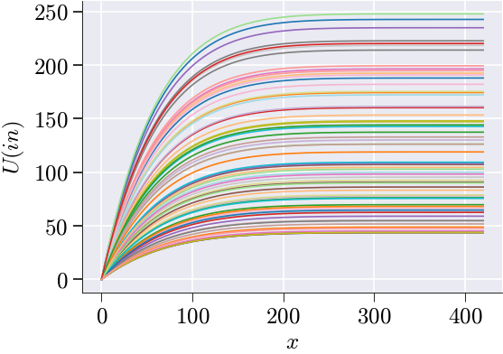
Mean Subtraction
# Compute the mean temperature field across all training snapshots
# This represents the "average" or "reference" temperature distribution
# Shape: [N_dof] - one mean value for each spatial degree of freedom
NLS_train_mean = np.mean(NLS_train, axis=0)
# Mean-center the training data by subtracting the mean field
# This creates fluctuations/deviations from the mean temperature distribution
# Shape: [N_train_snapshots, N_dof] - same as original but now mean-centered
# Each row now represents how much each snapshot deviates from the average
NLS_train_ms = NLS_train - NLS_train_mean
#We will use SVD on the mean subtracted matrix dataDistribution of the training parameters
# Visualize the parameter space distribution for training and testing data
# Plot training parameter combinations (first 16 samples)
# Extract first and second parameter columns for 2D visualization
plt.scatter(param_list[:16][:, 0], # First parameter (μ) for training samples which are the k_params
param_list[:16][:, 1], # Second parameter (β) for training samples which are the q_params
s=50, # Marker size
c='#163e64', # Dark blue color for training points
label="Training") # Legend label
# Plot testing parameter combinations (samples 17 and beyond)
plt.scatter(param_list[16:][:, 0], # First parameter (μ) for testing samples
param_list[16:][:, 1], # Second parameter (β) for testing samples
s=50, # Marker size (same as training)
c='#e97132', # Orange color for testing points
label="Testing") # Legend label
# Set axis labels using LaTeX formatting for mathematical notation
plt.xlabel("$\\mu$") # First parameter (often material property, conductivity, etc.) this is the k_params
plt.ylabel("$\\beta$") # Second parameter (often boundary condition, heat source, etc.) this is the q_params
# Add legend to distinguish between training and testing sets
plt.legend()
#See params and properties to see how these are used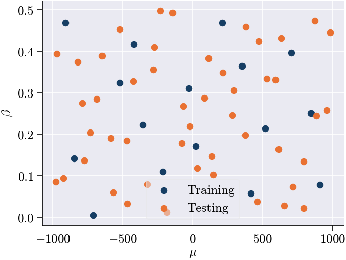
Performing SVD on training snapshots
# Configure plot styling for POD analysis visualization
plt.rcParams['lines.markersize'] = 6 # Set marker size for data points
plt.rcParams['lines.linewidth'] = 2.0 # Set line thickness for better visibility
# Perform Singular Value Decomposition (SVD) for POD mode selection
# SVD decomposes the mean-centered training data to find optimal basis functions
n_sel, U = svd_mode_selector(NLS_train_ms, # Input: mean-centered training snapshots
tolerance=1e-5, # Convergence criterion for mode selection
modes=True) # Return both number of modes and basis vectors
# Extract the selected POD basis vectors (spatial modes)
# V_sel contains the first n_sel most energetic POD modes
# Shape: [N_dof, n_sel] - each column is a spatial basis function
V_sel = U[:, :n_sel] # This will be passed to the ROM simulation function
# Set axis labels for the POD energy plot (generated by svd_mode_selector)
plt.ylabel('$1-r_{k}$') # Energy not captured by first k modes
plt.xlabel('POD modes ($k$)') # Number of POD modes retainedNumber of modes selected: 4Text(0.5, 0, 'POD modes ($k$)')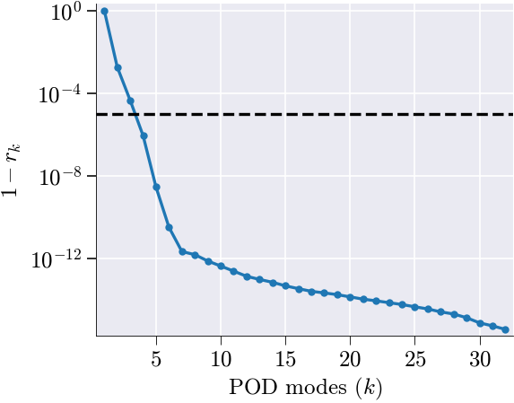
ROM Simulation
# Initialize the reduced-order model (ROM) simulation
# V_sel : precomputed basis matrix (e.g., selected POD modes)
# n_sel : number of basis vectors (modes) to retain in the ROM
rom = master.rom_simulation(V_sel=V_sel, n_sel = n_sel)[load_rom_data] loaded from /Users/syedabidi/Documents/GitHub/scikit-rom/examples/computational_mechanics/static/non_linear/problem_2_h/ROM_data# Run the reduced-order model (ROM) simulation.
# rom object will contain the NLS rom simulation solutions and other simulation aspects required by ROM such as the param_list etc.
generate = True
if generate:
rom.run_rom_simulation();
#Returns the Newton iteration errors just like full order simulationSnap 1/64 params=[379.40464169 0.45840518]
[Newton] Iter 0, step norm = 8.523e+03
[Newton] Iter 1, step norm = 5.685e+03
[Newton] Iter 2, step norm = 3.331e+03
[Newton] Iter 3, step norm = 1.811e+03
[Newton] Iter 4, step norm = 9.454e+02
[Newton] Iter 5, step norm = 4.832e+02
[Newton] Iter 6, step norm = 2.443e+02
[Newton] Iter 7, step norm = 1.228e+02
[Newton] Iter 8, step norm = 6.158e+01
[Newton] Iter 9, step norm = 3.083e+01
[Newton] Iter 10, step norm = 1.543e+01
[Newton] Iter 11, step norm = 7.716e+00
[Newton] Iter 12, step norm = 3.859e+00
[Newton] Iter 13, step norm = 1.929e+00
[Newton] Iter 14, step norm = 9.647e-01
[Newton] Iter 15, step norm = 4.824e-01
[Newton] Iter 16, step norm = 2.412e-01
[Newton] Iter 17, step norm = 1.206e-01
[Newton] Iter 18, step norm = 6.030e-02
[Newton] Iter 19, step norm = 3.015e-02
[Newton] Iter 20, step norm = 1.507e-02
[Newton] Iter 21, step norm = 7.537e-03
Snap 2/64 params=[-5.69398211e+02 6.02409658e-02]
[Newton] Iter 0, step norm = 2.852e+04
[Newton] Iter 1, step norm = 4.979e+03
[Newton] Iter 2, step norm = 1.826e+03
[Newton] Iter 3, step norm = 7.961e+02
[Newton] Iter 4, step norm = 3.730e+02
[Newton] Iter 5, step norm = 1.807e+02
[Newton] Iter 6, step norm = 8.895e+01
[Newton] Iter 7, step norm = 4.413e+01
[Newton] Iter 8, step norm = 2.198e+01
[Newton] Iter 9, step norm = 1.097e+01
[Newton] Iter 10, step norm = 5.479e+00
[Newton] Iter 11, step norm = 2.738e+00
[Newton] Iter 12, step norm = 1.369e+00
[Newton] Iter 13, step norm = 6.843e-01
[Newton] Iter 14, step norm = 3.421e-01
[Newton] Iter 15, step norm = 1.711e-01
[Newton] Iter 16, step norm = 8.553e-02
[Newton] Iter 17, step norm = 4.276e-02
[Newton] Iter 18, step norm = 2.138e-02
[Newton] Iter 19, step norm = 1.069e-02
[Newton] Iter 20, step norm = 5.345e-03
Snap 3/64 params=[-4.22111435e+02 3.27294988e-01]
[Newton] Iter 0, step norm = 7.139e+03
[Newton] Iter 1, step norm = 5.789e+03
[Newton] Iter 2, step norm = 3.834e+03
[Newton] Iter 3, step norm = 2.238e+03
[Newton] Iter 4, step norm = 1.214e+03
[Newton] Iter 5, step norm = 6.330e+02
[Newton] Iter 6, step norm = 3.233e+02
[Newton] Iter 7, step norm = 1.634e+02
[Newton] Iter 8, step norm = 8.214e+01
[Newton] Iter 9, step norm = 4.118e+01
[Newton] Iter 10, step norm = 2.062e+01
[Newton] Iter 11, step norm = 1.032e+01
[Newton] Iter 12, step norm = 5.160e+00
[Newton] Iter 13, step norm = 2.581e+00
[Newton] Iter 14, step norm = 1.290e+00
[Newton] Iter 15, step norm = 6.452e-01
[Newton] Iter 16, step norm = 3.226e-01
[Newton] Iter 17, step norm = 1.613e-01
[Newton] Iter 18, step norm = 8.065e-02
[Newton] Iter 19, step norm = 4.033e-02
[Newton] Iter 20, step norm = 2.016e-02
[Newton] Iter 21, step norm = 1.008e-02
[Newton] Iter 22, step norm = 5.041e-03
Snap 4/64 params=[6.12972487e+02 1.63946371e-01]
[Newton] Iter 0, step norm = 9.976e+03
[Newton] Iter 1, step norm = 3.347e+03
[Newton] Iter 2, step norm = 1.414e+03
[Newton] Iter 3, step norm = 6.531e+02
[Newton] Iter 4, step norm = 3.143e+02
[Newton] Iter 5, step norm = 1.542e+02
[Newton] Iter 6, step norm = 7.638e+01
[Newton] Iter 7, step norm = 3.801e+01
[Newton] Iter 8, step norm = 1.896e+01
[Newton] Iter 9, step norm = 9.470e+00
[Newton] Iter 10, step norm = 4.732e+00
[Newton] Iter 11, step norm = 2.365e+00
[Newton] Iter 12, step norm = 1.182e+00
[Newton] Iter 13, step norm = 5.912e-01
[Newton] Iter 14, step norm = 2.956e-01
[Newton] Iter 15, step norm = 1.478e-01
[Newton] Iter 16, step norm = 7.390e-02
[Newton] Iter 17, step norm = 3.695e-02
[Newton] Iter 18, step norm = 1.847e-02
[Newton] Iter 19, step norm = 9.237e-03
Snap 5/64 params=[9.59468717e+02 2.58334863e-01]
[Newton] Iter 0, step norm = 3.113e+03
[Newton] Iter 1, step norm = 1.854e+03
[Newton] Iter 2, step norm = 1.017e+03
[Newton] Iter 3, step norm = 5.338e+02
[Newton] Iter 4, step norm = 2.735e+02
[Newton] Iter 5, step norm = 1.384e+02
[Newton] Iter 6, step norm = 6.965e+01
[Newton] Iter 7, step norm = 3.493e+01
[Newton] Iter 8, step norm = 1.749e+01
[Newton] Iter 9, step norm = 8.754e+00
[Newton] Iter 10, step norm = 4.379e+00
[Newton] Iter 11, step norm = 2.190e+00
[Newton] Iter 12, step norm = 1.095e+00
[Newton] Iter 13, step norm = 5.475e-01
[Newton] Iter 14, step norm = 2.738e-01
[Newton] Iter 15, step norm = 1.369e-01
[Newton] Iter 16, step norm = 6.845e-02
[Newton] Iter 17, step norm = 3.422e-02
[Newton] Iter 18, step norm = 1.711e-02
[Newton] Iter 19, step norm = 8.556e-03
Snap 6/64 params=[-21.40811458 0.21905153]
[Newton] Iter 0, step norm = 1.145e+03
[Newton] Iter 1, step norm = 5.431e+02
[Newton] Iter 2, step norm = 2.646e+02
[Newton] Iter 3, step norm = 1.306e+02
[Newton] Iter 4, step norm = 6.491e+01
[Newton] Iter 5, step norm = 3.235e+01
[Newton] Iter 6, step norm = 1.615e+01
[Newton] Iter 7, step norm = 8.069e+00
[Newton] Iter 8, step norm = 4.033e+00
[Newton] Iter 9, step norm = 2.016e+00
[Newton] Iter 10, step norm = 1.008e+00
[Newton] Iter 11, step norm = 5.039e-01
[Newton] Iter 12, step norm = 2.520e-01
[Newton] Iter 13, step norm = 1.260e-01
[Newton] Iter 14, step norm = 6.299e-02
[Newton] Iter 15, step norm = 3.149e-02
[Newton] Iter 16, step norm = 1.575e-02
[Newton] Iter 17, step norm = 7.873e-03
Snap 7/64 params=[-9.71441925e+02 3.93336046e-01]
[Newton] Iter 0, step norm = 7.935e+03
[Newton] Iter 1, step norm = 5.480e+03
[Newton] Iter 2, step norm = 3.279e+03
[Newton] Iter 3, step norm = 1.804e+03
[Newton] Iter 4, step norm = 9.476e+02
[Newton] Iter 5, step norm = 4.859e+02
[Newton] Iter 6, step norm = 2.460e+02
[Newton] Iter 7, step norm = 1.238e+02
[Newton] Iter 8, step norm = 6.210e+01
[Newton] Iter 9, step norm = 3.110e+01
[Newton] Iter 10, step norm = 1.556e+01
[Newton] Iter 11, step norm = 7.784e+00
[Newton] Iter 12, step norm = 3.893e+00
[Newton] Iter 13, step norm = 1.947e+00
[Newton] Iter 14, step norm = 9.734e-01
[Newton] Iter 15, step norm = 4.867e-01
[Newton] Iter 16, step norm = 2.434e-01
[Newton] Iter 17, step norm = 1.217e-01
[Newton] Iter 18, step norm = 6.084e-02
[Newton] Iter 19, step norm = 3.042e-02
[Newton] Iter 20, step norm = 1.521e-02
[Newton] Iter 21, step norm = 7.605e-03
Snap 8/64 params=[32.54458867 0.11914556]
[Newton] Iter 0, step norm = 1.949e+04
[Newton] Iter 1, step norm = 4.807e+03
[Newton] Iter 2, step norm = 1.861e+03
[Newton] Iter 3, step norm = 8.292e+02
[Newton] Iter 4, step norm = 3.923e+02
[Newton] Iter 5, step norm = 1.909e+02
[Newton] Iter 6, step norm = 9.419e+01
[Newton] Iter 7, step norm = 4.678e+01
[Newton] Iter 8, step norm = 2.331e+01
[Newton] Iter 9, step norm = 1.164e+01
[Newton] Iter 10, step norm = 5.814e+00
[Newton] Iter 11, step norm = 2.906e+00
[Newton] Iter 12, step norm = 1.453e+00
[Newton] Iter 13, step norm = 7.262e-01
[Newton] Iter 14, step norm = 3.631e-01
[Newton] Iter 15, step norm = 1.815e-01
[Newton] Iter 16, step norm = 9.077e-02
[Newton] Iter 17, step norm = 4.538e-02
[Newton] Iter 18, step norm = 2.269e-02
[Newton] Iter 19, step norm = 1.135e-02
[Newton] Iter 20, step norm = 5.673e-03
Snap 9/64 params=[213.58328871 0.3480804 ]
[Newton] Iter 0, step norm = 7.098e+03
[Newton] Iter 1, step norm = 5.325e+03
[Newton] Iter 2, step norm = 3.355e+03
[Newton] Iter 3, step norm = 1.901e+03
[Newton] Iter 4, step norm = 1.015e+03
[Newton] Iter 5, step norm = 5.246e+02
[Newton] Iter 6, step norm = 2.668e+02
[Newton] Iter 7, step norm = 1.345e+02
[Newton] Iter 8, step norm = 6.755e+01
[Newton] Iter 9, step norm = 3.385e+01
[Newton] Iter 10, step norm = 1.694e+01
[Newton] Iter 11, step norm = 8.476e+00
[Newton] Iter 12, step norm = 4.239e+00
[Newton] Iter 13, step norm = 2.120e+00
[Newton] Iter 14, step norm = 1.060e+00
[Newton] Iter 15, step norm = 5.300e-01
[Newton] Iter 16, step norm = 2.650e-01
[Newton] Iter 17, step norm = 1.325e-01
[Newton] Iter 18, step norm = 6.625e-02
[Newton] Iter 19, step norm = 3.313e-02
[Newton] Iter 20, step norm = 1.656e-02
[Newton] Iter 21, step norm = 8.282e-03
Snap 10/64 params=[-7.74564363e+02 1.37362778e-01]
[Newton] Iter 0, step norm = 1.140e+04
[Newton] Iter 1, step norm = 3.631e+03
[Newton] Iter 2, step norm = 1.507e+03
[Newton] Iter 3, step norm = 6.911e+02
[Newton] Iter 4, step norm = 3.314e+02
[Newton] Iter 5, step norm = 1.623e+02
[Newton] Iter 6, step norm = 8.033e+01
[Newton] Iter 7, step norm = 3.996e+01
[Newton] Iter 8, step norm = 1.993e+01
[Newton] Iter 9, step norm = 9.952e+00
[Newton] Iter 10, step norm = 4.973e+00
[Newton] Iter 11, step norm = 2.486e+00
[Newton] Iter 12, step norm = 1.243e+00
[Newton] Iter 13, step norm = 6.213e-01
[Newton] Iter 14, step norm = 3.106e-01
[Newton] Iter 15, step norm = 1.553e-01
[Newton] Iter 16, step norm = 7.765e-02
[Newton] Iter 17, step norm = 3.883e-02
[Newton] Iter 18, step norm = 1.941e-02
[Newton] Iter 19, step norm = 9.706e-03
Snap 11/64 params=[-232.46311769 0.49817443]
[Newton] Iter 0, step norm = 1.212e+04
[Newton] Iter 1, step norm = 1.065e+04
[Newton] Iter 2, step norm = 7.437e+03
[Newton] Iter 3, step norm = 4.481e+03
[Newton] Iter 4, step norm = 2.475e+03
[Newton] Iter 5, step norm = 1.303e+03
[Newton] Iter 6, step norm = 6.688e+02
[Newton] Iter 7, step norm = 3.388e+02
[Newton] Iter 8, step norm = 1.706e+02
[Newton] Iter 9, step norm = 8.556e+01
[Newton] Iter 10, step norm = 4.285e+01
[Newton] Iter 11, step norm = 2.144e+01
[Newton] Iter 12, step norm = 1.073e+01
[Newton] Iter 13, step norm = 5.364e+00
[Newton] Iter 14, step norm = 2.682e+00
[Newton] Iter 15, step norm = 1.341e+00
[Newton] Iter 16, step norm = 6.707e-01
[Newton] Iter 17, step norm = 3.353e-01
[Newton] Iter 18, step norm = 1.677e-01
[Newton] Iter 19, step norm = 8.384e-02
[Newton] Iter 20, step norm = 4.192e-02
[Newton] Iter 21, step norm = 2.096e-02
[Newton] Iter 22, step norm = 1.048e-02
[Newton] Iter 23, step norm = 5.240e-03
Snap 12/64 params=[7.94526013e+02 2.23639673e-02]
[Newton] Iter 0, step norm = 4.035e+04
[Newton] Iter 1, step norm = 4.197e+03
[Newton] Iter 2, step norm = 1.516e+03
[Newton] Iter 3, step norm = 6.576e+02
[Newton] Iter 4, step norm = 3.074e+02
[Newton] Iter 5, step norm = 1.487e+02
[Newton] Iter 6, step norm = 7.316e+01
[Newton] Iter 7, step norm = 3.628e+01
[Newton] Iter 8, step norm = 1.807e+01
[Newton] Iter 9, step norm = 9.016e+00
[Newton] Iter 10, step norm = 4.504e+00
[Newton] Iter 11, step norm = 2.251e+00
[Newton] Iter 12, step norm = 1.125e+00
[Newton] Iter 13, step norm = 5.625e-01
[Newton] Iter 14, step norm = 2.812e-01
[Newton] Iter 15, step norm = 1.406e-01
[Newton] Iter 16, step norm = 7.030e-02
[Newton] Iter 17, step norm = 3.515e-02
[Newton] Iter 18, step norm = 1.757e-02
[Newton] Iter 19, step norm = 8.787e-03
Snap 13/64 params=[6.33093875e+02 4.31213229e-01]
[Newton] Iter 0, step norm = 9.159e+03
[Newton] Iter 1, step norm = 9.139e+03
[Newton] Iter 2, step norm = 6.971e+03
[Newton] Iter 3, step norm = 4.439e+03
[Newton] Iter 4, step norm = 2.530e+03
[Newton] Iter 5, step norm = 1.355e+03
[Newton] Iter 6, step norm = 7.019e+02
[Newton] Iter 7, step norm = 3.573e+02
[Newton] Iter 8, step norm = 1.803e+02
[Newton] Iter 9, step norm = 9.054e+01
[Newton] Iter 10, step norm = 4.537e+01
[Newton] Iter 11, step norm = 2.271e+01
[Newton] Iter 12, step norm = 1.136e+01
[Newton] Iter 13, step norm = 5.683e+00
[Newton] Iter 14, step norm = 2.842e+00
[Newton] Iter 15, step norm = 1.421e+00
[Newton] Iter 16, step norm = 7.105e-01
[Newton] Iter 17, step norm = 3.553e-01
[Newton] Iter 18, step norm = 1.776e-01
[Newton] Iter 19, step norm = 8.882e-02
[Newton] Iter 20, step norm = 4.441e-02
[Newton] Iter 21, step norm = 2.220e-02
[Newton] Iter 22, step norm = 1.110e-02
[Newton] Iter 23, step norm = 5.551e-03
Snap 14/64 params=[-3.24078431e+02 7.93764829e-02]
[Newton] Iter 0, step norm = 2.331e+04
[Newton] Iter 1, step norm = 4.840e+03
[Newton] Iter 2, step norm = 1.814e+03
[Newton] Iter 3, step norm = 7.979e+02
[Newton] Iter 4, step norm = 3.753e+02
[Newton] Iter 5, step norm = 1.822e+02
[Newton] Iter 6, step norm = 8.974e+01
[Newton] Iter 7, step norm = 4.454e+01
[Newton] Iter 8, step norm = 2.219e+01
[Newton] Iter 9, step norm = 1.107e+01
[Newton] Iter 10, step norm = 5.532e+00
[Newton] Iter 11, step norm = 2.765e+00
[Newton] Iter 12, step norm = 1.382e+00
[Newton] Iter 13, step norm = 6.910e-01
[Newton] Iter 14, step norm = 3.455e-01
[Newton] Iter 15, step norm = 1.727e-01
[Newton] Iter 16, step norm = 8.637e-02
[Newton] Iter 17, step norm = 4.318e-02
[Newton] Iter 18, step norm = 2.159e-02
[Newton] Iter 19, step norm = 1.080e-02
[Newton] Iter 20, step norm = 5.398e-03
Snap 15/64 params=[-6.84534529e+02 2.84918629e-01]
[Newton] Iter 0, step norm = 5.964e+03
[Newton] Iter 1, step norm = 4.434e+03
[Newton] Iter 2, step norm = 2.777e+03
[Newton] Iter 3, step norm = 1.568e+03
[Newton] Iter 4, step norm = 8.356e+02
[Newton] Iter 5, step norm = 4.316e+02
[Newton] Iter 6, step norm = 2.194e+02
[Newton] Iter 7, step norm = 1.106e+02
[Newton] Iter 8, step norm = 5.553e+01
[Newton] Iter 9, step norm = 2.782e+01
[Newton] Iter 10, step norm = 1.393e+01
[Newton] Iter 11, step norm = 6.966e+00
[Newton] Iter 12, step norm = 3.484e+00
[Newton] Iter 13, step norm = 1.742e+00
[Newton] Iter 14, step norm = 8.712e-01
[Newton] Iter 15, step norm = 4.356e-01
[Newton] Iter 16, step norm = 2.178e-01
[Newton] Iter 17, step norm = 1.089e-01
[Newton] Iter 18, step norm = 5.445e-02
[Newton] Iter 19, step norm = 2.723e-02
[Newton] Iter 20, step norm = 1.361e-02
[Newton] Iter 21, step norm = 6.806e-03
Snap 16/64 params=[3.74406502e+02 1.98266296e-01]
[Newton] Iter 0, step norm = 5.185e+03
[Newton] Iter 1, step norm = 2.090e+03
[Newton] Iter 2, step norm = 9.463e+02
[Newton] Iter 3, step norm = 4.511e+02
[Newton] Iter 4, step norm = 2.203e+02
[Newton] Iter 5, step norm = 1.089e+02
[Newton] Iter 6, step norm = 5.414e+01
[Newton] Iter 7, step norm = 2.699e+01
[Newton] Iter 8, step norm = 1.348e+01
[Newton] Iter 9, step norm = 6.733e+00
[Newton] Iter 10, step norm = 3.365e+00
[Newton] Iter 11, step norm = 1.682e+00
[Newton] Iter 12, step norm = 8.411e-01
[Newton] Iter 13, step norm = 4.205e-01
[Newton] Iter 14, step norm = 2.103e-01
[Newton] Iter 15, step norm = 1.051e-01
[Newton] Iter 16, step norm = 5.256e-02
[Newton] Iter 17, step norm = 2.628e-02
[Newton] Iter 18, step norm = 1.314e-02
[Newton] Iter 19, step norm = 6.570e-03
Snap 17/64 params=[293.84621046 0.30568366]
[Newton] Iter 0, step norm = 4.209e+03
[Newton] Iter 1, step norm = 2.576e+03
[Newton] Iter 2, step norm = 1.435e+03
[Newton] Iter 3, step norm = 7.592e+02
[Newton] Iter 4, step norm = 3.906e+02
[Newton] Iter 5, step norm = 1.982e+02
[Newton] Iter 6, step norm = 9.981e+01
[Newton] Iter 7, step norm = 5.009e+01
[Newton] Iter 8, step norm = 2.509e+01
[Newton] Iter 9, step norm = 1.256e+01
[Newton] Iter 10, step norm = 6.281e+00
[Newton] Iter 11, step norm = 3.141e+00
[Newton] Iter 12, step norm = 1.571e+00
[Newton] Iter 13, step norm = 7.855e-01
[Newton] Iter 14, step norm = 3.928e-01
[Newton] Iter 15, step norm = 1.964e-01
[Newton] Iter 16, step norm = 9.819e-02
[Newton] Iter 17, step norm = 4.910e-02
[Newton] Iter 18, step norm = 2.455e-02
[Newton] Iter 19, step norm = 1.227e-02
[Newton] Iter 20, step norm = 6.137e-03
Snap 18/64 params=[-7.33844534e+02 2.04844581e-01]
[Newton] Iter 0, step norm = 4.485e+03
[Newton] Iter 1, step norm = 1.874e+03
[Newton] Iter 2, step norm = 8.616e+02
[Newton] Iter 3, step norm = 4.137e+02
[Newton] Iter 4, step norm = 2.027e+02
[Newton] Iter 5, step norm = 1.004e+02
[Newton] Iter 6, step norm = 4.994e+01
[Newton] Iter 7, step norm = 2.491e+01
[Newton] Iter 8, step norm = 1.244e+01
[Newton] Iter 9, step norm = 6.215e+00
[Newton] Iter 10, step norm = 3.107e+00
[Newton] Iter 11, step norm = 1.553e+00
[Newton] Iter 12, step norm = 7.765e-01
[Newton] Iter 13, step norm = 3.882e-01
[Newton] Iter 14, step norm = 1.941e-01
[Newton] Iter 15, step norm = 9.706e-02
[Newton] Iter 16, step norm = 4.853e-02
[Newton] Iter 17, step norm = 2.426e-02
[Newton] Iter 18, step norm = 1.213e-02
[Newton] Iter 19, step norm = 6.066e-03
Snap 19/64 params=[-273.77833799 0.40946727]
[Newton] Iter 0, step norm = 8.225e+03
[Newton] Iter 1, step norm = 5.765e+03
[Newton] Iter 2, step norm = 3.481e+03
[Newton] Iter 3, step norm = 1.925e+03
[Newton] Iter 4, step norm = 1.014e+03
[Newton] Iter 5, step norm = 5.207e+02
[Newton] Iter 6, step norm = 2.639e+02
[Newton] Iter 7, step norm = 1.328e+02
[Newton] Iter 8, step norm = 6.664e+01
[Newton] Iter 9, step norm = 3.338e+01
[Newton] Iter 10, step norm = 1.670e+01
[Newton] Iter 11, step norm = 8.355e+00
[Newton] Iter 12, step norm = 4.178e+00
[Newton] Iter 13, step norm = 2.089e+00
[Newton] Iter 14, step norm = 1.045e+00
[Newton] Iter 15, step norm = 5.224e-01
[Newton] Iter 16, step norm = 2.612e-01
[Newton] Iter 17, step norm = 1.306e-01
[Newton] Iter 18, step norm = 6.530e-02
[Newton] Iter 19, step norm = 3.265e-02
[Newton] Iter 20, step norm = 1.632e-02
[Newton] Iter 21, step norm = 8.162e-03
Snap 20/64 params=[7.14644143e+02 7.37782619e-02]
[Newton] Iter 0, step norm = 2.367e+04
[Newton] Iter 1, step norm = 4.657e+03
[Newton] Iter 2, step norm = 1.732e+03
[Newton] Iter 3, step norm = 7.592e+02
[Newton] Iter 4, step norm = 3.566e+02
[Newton] Iter 5, step norm = 1.729e+02
[Newton] Iter 6, step norm = 8.518e+01
[Newton] Iter 7, step norm = 4.227e+01
[Newton] Iter 8, step norm = 2.106e+01
[Newton] Iter 9, step norm = 1.051e+01
[Newton] Iter 10, step norm = 5.249e+00
[Newton] Iter 11, step norm = 2.623e+00
[Newton] Iter 12, step norm = 1.311e+00
[Newton] Iter 13, step norm = 6.556e-01
[Newton] Iter 14, step norm = 3.278e-01
[Newton] Iter 15, step norm = 1.639e-01
[Newton] Iter 16, step norm = 8.195e-02
[Newton] Iter 17, step norm = 4.097e-02
[Newton] Iter 18, step norm = 2.049e-02
[Newton] Iter 19, step norm = 1.024e-02
[Newton] Iter 20, step norm = 5.122e-03
Snap 21/64 params=[8.73147313e+02 4.73533255e-01]
[Newton] Iter 0, step norm = 1.048e+04
[Newton] Iter 1, step norm = 1.001e+04
[Newton] Iter 2, step norm = 7.401e+03
[Newton] Iter 3, step norm = 4.621e+03
[Newton] Iter 4, step norm = 2.604e+03
[Newton] Iter 5, step norm = 1.386e+03
[Newton] Iter 6, step norm = 7.156e+02
[Newton] Iter 7, step norm = 3.637e+02
[Newton] Iter 8, step norm = 1.833e+02
[Newton] Iter 9, step norm = 9.203e+01
[Newton] Iter 10, step norm = 4.611e+01
[Newton] Iter 11, step norm = 2.308e+01
[Newton] Iter 12, step norm = 1.155e+01
[Newton] Iter 13, step norm = 5.774e+00
[Newton] Iter 14, step norm = 2.887e+00
[Newton] Iter 15, step norm = 1.444e+00
[Newton] Iter 16, step norm = 7.219e-01
[Newton] Iter 17, step norm = 3.610e-01
[Newton] Iter 18, step norm = 1.805e-01
[Newton] Iter 19, step norm = 9.024e-02
[Newton] Iter 20, step norm = 4.512e-02
[Newton] Iter 21, step norm = 2.256e-02
[Newton] Iter 22, step norm = 1.128e-02
[Newton] Iter 23, step norm = 5.640e-03
Snap 22/64 params=[-1.85091523e+02 1.18484898e-02]
[Newton] Iter 0, step norm = 3.345e+04
[Newton] Iter 1, step norm = 4.233e+03
[Newton] Iter 2, step norm = 1.527e+03
[Newton] Iter 3, step norm = 6.615e+02
[Newton] Iter 4, step norm = 3.091e+02
[Newton] Iter 5, step norm = 1.495e+02
[Newton] Iter 6, step norm = 7.355e+01
[Newton] Iter 7, step norm = 3.648e+01
[Newton] Iter 8, step norm = 1.817e+01
[Newton] Iter 9, step norm = 9.065e+00
[Newton] Iter 10, step norm = 4.528e+00
[Newton] Iter 11, step norm = 2.263e+00
[Newton] Iter 12, step norm = 1.131e+00
[Newton] Iter 13, step norm = 5.655e-01
[Newton] Iter 14, step norm = 2.827e-01
[Newton] Iter 15, step norm = 1.414e-01
[Newton] Iter 16, step norm = 7.068e-02
[Newton] Iter 17, step norm = 3.534e-02
[Newton] Iter 18, step norm = 1.767e-02
[Newton] Iter 19, step norm = 8.835e-03
Snap 23/64 params=[-8.22895171e+02 3.73701671e-01]
[Newton] Iter 0, step norm = 8.392e+03
[Newton] Iter 1, step norm = 8.029e+03
[Newton] Iter 2, step norm = 5.947e+03
[Newton] Iter 3, step norm = 3.717e+03
[Newton] Iter 4, step norm = 2.096e+03
[Newton] Iter 5, step norm = 1.116e+03
[Newton] Iter 6, step norm = 5.763e+02
[Newton] Iter 7, step norm = 2.929e+02
[Newton] Iter 8, step norm = 1.476e+02
[Newton] Iter 9, step norm = 7.412e+01
[Newton] Iter 10, step norm = 3.714e+01
[Newton] Iter 11, step norm = 1.859e+01
[Newton] Iter 12, step norm = 9.299e+00
[Newton] Iter 13, step norm = 4.651e+00
[Newton] Iter 14, step norm = 2.326e+00
[Newton] Iter 15, step norm = 1.163e+00
[Newton] Iter 16, step norm = 5.814e-01
[Newton] Iter 17, step norm = 2.907e-01
[Newton] Iter 18, step norm = 1.454e-01
[Newton] Iter 19, step norm = 7.268e-02
[Newton] Iter 20, step norm = 3.634e-02
[Newton] Iter 21, step norm = 1.817e-02
[Newton] Iter 22, step norm = 9.085e-03
Snap 24/64 params=[134.00264829 0.14689736]
[Newton] Iter 0, step norm = 1.540e+04
[Newton] Iter 1, step norm = 4.399e+03
[Newton] Iter 2, step norm = 1.767e+03
[Newton] Iter 3, step norm = 7.990e+02
[Newton] Iter 4, step norm = 3.806e+02
[Newton] Iter 5, step norm = 1.859e+02
[Newton] Iter 6, step norm = 9.184e+01
[Newton] Iter 7, step norm = 4.565e+01
[Newton] Iter 8, step norm = 2.276e+01
[Newton] Iter 9, step norm = 1.136e+01
[Newton] Iter 10, step norm = 5.677e+00
[Newton] Iter 11, step norm = 2.838e+00
[Newton] Iter 12, step norm = 1.419e+00
[Newton] Iter 13, step norm = 7.092e-01
[Newton] Iter 14, step norm = 3.546e-01
[Newton] Iter 15, step norm = 1.773e-01
[Newton] Iter 16, step norm = 8.864e-02
[Newton] Iter 17, step norm = 4.432e-02
[Newton] Iter 18, step norm = 2.216e-02
[Newton] Iter 19, step norm = 1.108e-02
[Newton] Iter 20, step norm = 5.540e-03
Snap 25/64 params=[112.12611198 0.38282099]
[Newton] Iter 0, step norm = 8.009e+03
[Newton] Iter 1, step norm = 6.038e+03
[Newton] Iter 2, step norm = 3.816e+03
[Newton] Iter 3, step norm = 2.166e+03
[Newton] Iter 4, step norm = 1.157e+03
[Newton] Iter 5, step norm = 5.986e+02
[Newton] Iter 6, step norm = 3.045e+02
[Newton] Iter 7, step norm = 1.536e+02
[Newton] Iter 8, step norm = 7.712e+01
[Newton] Iter 9, step norm = 3.864e+01
[Newton] Iter 10, step norm = 1.934e+01
[Newton] Iter 11, step norm = 9.677e+00
[Newton] Iter 12, step norm = 4.840e+00
[Newton] Iter 13, step norm = 2.420e+00
[Newton] Iter 14, step norm = 1.210e+00
[Newton] Iter 15, step norm = 6.051e-01
[Newton] Iter 16, step norm = 3.026e-01
[Newton] Iter 17, step norm = 1.513e-01
[Newton] Iter 18, step norm = 7.564e-02
[Newton] Iter 19, step norm = 3.782e-02
[Newton] Iter 20, step norm = 1.891e-02
[Newton] Iter 21, step norm = 9.455e-03
Snap 26/64 params=[-9.23110092e+02 9.45048016e-02]
[Newton] Iter 0, step norm = 1.732e+04
[Newton] Iter 1, step norm = 4.401e+03
[Newton] Iter 2, step norm = 1.716e+03
[Newton] Iter 3, step norm = 7.666e+02
[Newton] Iter 4, step norm = 3.632e+02
[Newton] Iter 5, step norm = 1.768e+02
[Newton] Iter 6, step norm = 8.727e+01
[Newton] Iter 7, step norm = 4.335e+01
[Newton] Iter 8, step norm = 2.161e+01
[Newton] Iter 9, step norm = 1.079e+01
[Newton] Iter 10, step norm = 5.388e+00
[Newton] Iter 11, step norm = 2.693e+00
[Newton] Iter 12, step norm = 1.346e+00
[Newton] Iter 13, step norm = 6.731e-01
[Newton] Iter 14, step norm = 3.365e-01
[Newton] Iter 15, step norm = 1.683e-01
[Newton] Iter 16, step norm = 8.413e-02
[Newton] Iter 17, step norm = 4.206e-02
[Newton] Iter 18, step norm = 2.103e-02
[Newton] Iter 19, step norm = 1.052e-02
[Newton] Iter 20, step norm = 5.258e-03
Snap 27/64 params=[-68.78060661 0.26786986]
[Newton] Iter 0, step norm = 4.922e+03
[Newton] Iter 1, step norm = 3.366e+03
[Newton] Iter 2, step norm = 2.003e+03
[Newton] Iter 3, step norm = 1.098e+03
[Newton] Iter 4, step norm = 5.759e+02
[Newton] Iter 5, step norm = 2.950e+02
[Newton] Iter 6, step norm = 1.493e+02
[Newton] Iter 7, step norm = 7.513e+01
[Newton] Iter 8, step norm = 3.768e+01
[Newton] Iter 9, step norm = 1.887e+01
[Newton] Iter 10, step norm = 9.442e+00
[Newton] Iter 11, step norm = 4.723e+00
[Newton] Iter 12, step norm = 2.362e+00
[Newton] Iter 13, step norm = 1.181e+00
[Newton] Iter 14, step norm = 5.906e-01
[Newton] Iter 15, step norm = 2.953e-01
[Newton] Iter 16, step norm = 1.476e-01
[Newton] Iter 17, step norm = 7.382e-02
[Newton] Iter 18, step norm = 3.691e-02
[Newton] Iter 19, step norm = 1.846e-02
[Newton] Iter 20, step norm = 9.228e-03
Snap 28/64 params=[8.80846407e+02 2.44673216e-01]
[Newton] Iter 0, step norm = 1.735e+03
[Newton] Iter 1, step norm = 8.063e+02
[Newton] Iter 2, step norm = 3.890e+02
[Newton] Iter 3, step norm = 1.911e+02
[Newton] Iter 4, step norm = 9.473e+01
[Newton] Iter 5, step norm = 4.716e+01
[Newton] Iter 6, step norm = 2.353e+01
[Newton] Iter 7, step norm = 1.175e+01
[Newton] Iter 8, step norm = 5.873e+00
[Newton] Iter 9, step norm = 2.936e+00
[Newton] Iter 10, step norm = 1.468e+00
[Newton] Iter 11, step norm = 7.337e-01
[Newton] Iter 12, step norm = 3.669e-01
[Newton] Iter 13, step norm = 1.834e-01
[Newton] Iter 14, step norm = 9.171e-02
[Newton] Iter 15, step norm = 4.586e-02
[Newton] Iter 16, step norm = 2.293e-02
[Newton] Iter 17, step norm = 1.146e-02
[Newton] Iter 18, step norm = 5.732e-03
Snap 29/64 params=[5.31423109e+02 3.33873691e-01]
[Newton] Iter 0, step norm = 4.048e+03
[Newton] Iter 1, step norm = 2.402e+03
[Newton] Iter 2, step norm = 1.315e+03
[Newton] Iter 3, step norm = 6.891e+02
[Newton] Iter 4, step norm = 3.529e+02
[Newton] Iter 5, step norm = 1.786e+02
[Newton] Iter 6, step norm = 8.982e+01
[Newton] Iter 7, step norm = 4.505e+01
[Newton] Iter 8, step norm = 2.256e+01
[Newton] Iter 9, step norm = 1.129e+01
[Newton] Iter 10, step norm = 5.646e+00
[Newton] Iter 11, step norm = 2.823e+00
[Newton] Iter 12, step norm = 1.412e+00
[Newton] Iter 13, step norm = 7.060e-01
[Newton] Iter 14, step norm = 3.530e-01
[Newton] Iter 15, step norm = 1.765e-01
[Newton] Iter 16, step norm = 8.825e-02
[Newton] Iter 17, step norm = 4.413e-02
[Newton] Iter 18, step norm = 2.206e-02
[Newton] Iter 19, step norm = 1.103e-02
[Newton] Iter 20, step norm = 5.516e-03
Snap 30/64 params=[-4.72410511e+02 1.84711821e-01]
[Newton] Iter 0, step norm = 7.432e+03
[Newton] Iter 1, step norm = 2.782e+03
[Newton] Iter 2, step norm = 1.223e+03
[Newton] Iter 3, step norm = 5.752e+02
[Newton] Iter 4, step norm = 2.791e+02
[Newton] Iter 5, step norm = 1.375e+02
[Newton] Iter 6, step norm = 6.825e+01
[Newton] Iter 7, step norm = 3.400e+01
[Newton] Iter 8, step norm = 1.697e+01
[Newton] Iter 9, step norm = 8.476e+00
[Newton] Iter 10, step norm = 4.236e+00
[Newton] Iter 11, step norm = 2.118e+00
[Newton] Iter 12, step norm = 1.059e+00
[Newton] Iter 13, step norm = 5.293e-01
[Newton] Iter 14, step norm = 2.646e-01
[Newton] Iter 15, step norm = 1.323e-01
[Newton] Iter 16, step norm = 6.616e-02
[Newton] Iter 17, step norm = 3.308e-02
[Newton] Iter 18, step norm = 1.654e-02
[Newton] Iter 19, step norm = 8.270e-03
Snap 31/64 params=[-5.20089112e+02 4.52807373e-01]
[Newton] Iter 0, step norm = 1.047e+04
[Newton] Iter 1, step norm = 8.143e+03
[Newton] Iter 2, step norm = 5.250e+03
[Newton] Iter 3, step norm = 3.015e+03
[Newton] Iter 4, step norm = 1.621e+03
[Newton] Iter 5, step norm = 8.413e+02
[Newton] Iter 6, step norm = 4.287e+02
[Newton] Iter 7, step norm = 2.164e+02
[Newton] Iter 8, step norm = 1.087e+02
[Newton] Iter 9, step norm = 5.449e+01
[Newton] Iter 10, step norm = 2.728e+01
[Newton] Iter 11, step norm = 1.365e+01
[Newton] Iter 12, step norm = 6.826e+00
[Newton] Iter 13, step norm = 3.413e+00
[Newton] Iter 14, step norm = 1.707e+00
[Newton] Iter 15, step norm = 8.534e-01
[Newton] Iter 16, step norm = 4.267e-01
[Newton] Iter 17, step norm = 2.134e-01
[Newton] Iter 18, step norm = 1.067e-01
[Newton] Iter 19, step norm = 5.334e-02
[Newton] Iter 20, step norm = 2.667e-02
[Newton] Iter 21, step norm = 1.334e-02
[Newton] Iter 22, step norm = 6.668e-03
Snap 32/64 params=[4.59963931e+02 3.84954219e-02]
[Newton] Iter 0, step norm = 3.237e+04
[Newton] Iter 1, step norm = 4.575e+03
[Newton] Iter 2, step norm = 1.653e+03
[Newton] Iter 3, step norm = 7.171e+02
[Newton] Iter 4, step norm = 3.352e+02
[Newton] Iter 5, step norm = 1.622e+02
[Newton] Iter 6, step norm = 7.978e+01
[Newton] Iter 7, step norm = 3.957e+01
[Newton] Iter 8, step norm = 1.971e+01
[Newton] Iter 9, step norm = 9.833e+00
[Newton] Iter 10, step norm = 4.912e+00
[Newton] Iter 11, step norm = 2.455e+00
[Newton] Iter 12, step norm = 1.227e+00
[Newton] Iter 13, step norm = 6.134e-01
[Newton] Iter 14, step norm = 3.067e-01
[Newton] Iter 15, step norm = 1.533e-01
[Newton] Iter 16, step norm = 7.667e-02
[Newton] Iter 17, step norm = 3.833e-02
[Newton] Iter 18, step norm = 1.917e-02
[Newton] Iter 19, step norm = 9.583e-03#Assign values for the statistics
NLS_rom = np.asarray(rom.rom_solutions)
ROM_speed_up = rom.speed_up
ROM_speed_up=ROM_speed_up
ROM_relative_error = rom.rom_errorROM solution vs. Full order solution performance statistics
# --- Standard ROM error analysis ---
# Compute a flat matrix of error metrics comparing true nonlinear solutions to ROM approximations
matrix = compute_rom_error_metrics_flat(NLS_test, NLS_rom)
# Produce a text-based report summarizing these error metrics
generate_rom_error_report(matrix)
# Plot diagnostic figures: error vs. speed-up for the standard ROM
plot_rom_error_diagnostics_flat(
NLS_test, # full-order (true) solution snapshots
NLS_rom, # ROM-generated solution snapshots
ROM_relative_error, # precomputed relative error of the ROM
ROM_speed_up, # precomputed speed-up factor of the ROM
sim_axis=['True', 'ROM'],
metrics=matrix # the matrix of error metrics just computed
)===================
ROM Accuracy Report
===================
Global Errors:
L2 Error: 6.6506e-02
Relative L2 Error: 7.5178e-07
L∞ Error: 2.7157e-04
Relative L∞ Error: 1.0965e-06
RMSE: 9.1847e-05
MAE: 7.4258e-05
Statistical Fit:
R² Score: 1.0000
Explained Variance: 1.0000
Error Distribution:
Median Error: -1.2581e-05
95th Percentile Error: 1.7196e-04
Time/Parameter-Dependent Errors:
Average Rel L2 Error over time/parameter: 9.6466e-07
Max Rel L2 Error over time/parameter: 1.7223e-06
Min Rel L2 Error over time/parameter: 5.6664e-07
――――――――――――――――――――――――――――――――――――――――――――――――――――――――――――――――――――――――――――――――――――――――――――――――――――――――――――――――――――――――――――――――――――――――――――――――――――――――――――――――――――――――――――――――――――――――――――――――――――――――――――――――――――――――――――――――――――――――――――――――――――――――――――――――――――――――――――――――――――――――――――――――――――――――――――――――――――――――――――――――――――――――――――――――――――――――――――――――――――――――――――――――――――――――――――――――――――――――――――――――――――――――――――――――――――――――――――――――――――――――――――――――――――――――――――――――――――――――――――――――――――――――――――――――――――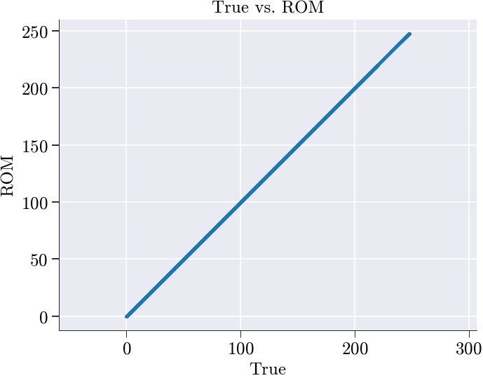
spatial_shape not given → skipping spatial snapshots.
--------------------------------------------------------------------------------------------------------------------------------------------------------------------------------------------------------------------------------------------------------------------------------------------------------------------------------------------------------------------------------------------------------------------------------------------------------------------------------------------------------------------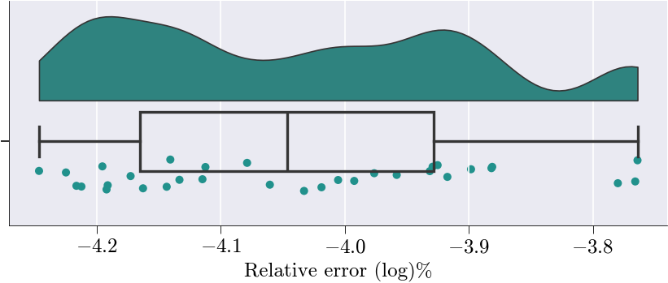
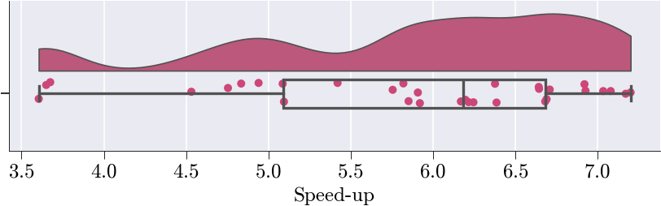
Hyper ROM Simulation
Mesh Sampling
prob = ProblemNonLinear()
sim_data['dirichlet_dofs'] = prob.domain()['dirichlet_boundary_dofs']
free_dofs = prob.domain()['free_dofs']# Get the finite element basis object for ROM construction
# This contains the spatial discretization information and basis functions
basis = sim_data['basis'].item()
# Create the ROM residual linear form object
# This represents the linear form R(u,v) in the weak formulation of the PDE
Residual = LinearFormROM(R, # Linear form function from problem definition
basis, # Finite element basis functions
V_sel, # Selected POD modes (reduced basis)
free_dofs=free_dofs) # Free DOFs (excluding Dirichlet boundaries)
# Extract parameter values corresponding to training snapshots
# Uses the boolean mask to get only the parameter combinations used for training
training_params = param_list[train_mask]q_mus = collect_residuals(
NLS_train_ms,
NLS_train_mean,
V_sel,
reconstruct_solution,
Residual,
training_params,
prob.assemble_kwargs,
)
print(q_mus.shape)(128, 16384)Performing the SVD on snapshots
print("Performing SVD...")
# Performs Singular Value Decomposition on q_mus matrix
# Returns U (left singular vectors), s (singular values), Vh (right singular vectors transposed)
Uh, s, Vh = np.linalg.svd(q_mus, full_matrices=False)
# Plots singular values on a logarithmic y-scale to visualize their decay
# This helps identify the effective rank/dimensionality of the matrix
plt.semilogy(s, 'o-')
# Takes the first 20 right singular vectors (rows of Vh)
# This creates a reduced basis capturing the most significant modes
V_q_eff = Vh[:100]
# Computes a weighted combination of the basis vectors
# Each basis vector is weighted equally (multiplied by 1)
# This essentially sums all 20 basis vectors
d_q = V_q_eff @ np.ones(V_q_eff.shape[1])
# Outputs the L2 norm of the resulting vector
# This gives a sense of the magnitude of the combined basis representation
print("magnitude of d_q:", np.linalg.norm(d_q))Performing SVD...
magnitude of d_q: 127.99503421751439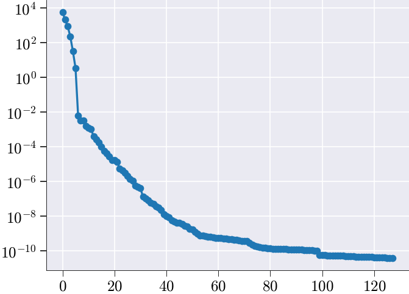
NNLS matrix
# Solve the non-negative least squares (NNLS) problem using hyperreduce
# V_q_eff : effective basis matrix
# verbosity : level of log output (2 = detailed)
# const_tol : tolerance for column selection
# zero_tol : tolerance to treat values as zero
# plot : disable plotting
x_nnls_m, err = hyperreduce(
V_q_eff,
verbosity=2,
const_tol=1e-8,
zero_tol=1e-8,
plot=False
)
# Compute and print the relative NNLS reconstruction error:
# ‖q_mus·(x_nnls_m – 1)‖ / ‖q_mus·1‖
rel_error = np.linalg.norm(q_mus @ (x_nnls_m - np.ones_like(x_nnls_m)))
rel_error /= np.linalg.norm(q_mus @ np.ones_like(x_nnls_m))
print("NNLS error:", rel_error)NNLSSolver init (Sequential Version)
Starting NNLS solve...
0 0 100 16384 0 9.737829153638639e+01 1.279950342175144e+02
1 1 100 16384 1 9.565824647370191e+01 1.276619706060919e+02
2 2 100 16384 2 9.558928636939211e+01 1.276511866916186e+02
3 3 100 16384 3 9.209550035842155e+01 1.268902935630036e+02
4 4 100 16384 4 9.242764410085283e+01 1.268623265666747e+02
5 5 100 16384 5 9.233177629752896e+01 1.268390942800287e+02
6 6 100 16384 6 9.228910346692946e+01 1.268271439259772e+02
7 7 100 16384 7 9.225092906506507e+01 1.268145318966445e+02
8 8 100 16384 8 9.131988541638977e+01 1.266212101820346e+02
9 9 100 16384 9 9.092468033734301e+01 1.265075660921044e+02
10 10 100 16384 10 9.126946169525117e+01 1.264757433400757e+02
11 11 100 16384 11 9.114785980103917e+01 1.264456191289330e+02
12 12 100 16384 12 9.096140021812205e+01 1.263185194528158e+02
13 13 100 16384 13 9.086703591288881e+01 1.262897900406543e+02
14 14 100 16384 14 9.087093142364840e+01 1.262773485722787e+02
15 16 100 16384 14 9.055222040072906e+01 1.249170342972616e+02
16 18 100 16384 14 8.813785854647155e+01 1.223380347788769e+02
17 19 100 16384 15 8.588149799167833e+01 1.197624149152207e+02
18 20 100 16384 16 8.583749493370163e+01 1.197398151885403e+02
19 22 100 16384 16 7.848583713455774e+01 1.159664290912565e+02
20 23 100 16384 17 7.495387536291246e+01 1.125870499805723e+02
21 25 100 16384 17 7.571629473542809e+01 1.124287585170136e+02
22 26 100 16384 18 6.836680838076947e+01 1.066059296799511e+02
23 27 100 16384 19 6.823218045927369e+01 1.065581457055531e+02
24 28 100 16384 20 6.769065215937491e+01 1.061335970840028e+02
25 29 100 16384 21 6.714789498201085e+01 1.058405835749042e+02
26 31 100 16384 21 5.846046811008043e+01 9.925258681227398e+01
27 33 100 16384 21 5.815733495705002e+01 9.887753961198950e+01
28 34 100 16384 22 5.805139920205155e+01 9.883782982004951e+01
29 35 100 16384 23 4.997170919653223e+01 9.358006514292768e+01
30 37 100 16384 23 4.993626114571715e+01 9.346343937375279e+01
31 38 100 16384 24 4.439489574724112e+01 8.832636894868116e+01
32 39 100 16384 25 4.082347498215297e+01 8.364706467280777e+01
33 41 100 16384 25 3.407493965557607e+01 7.717862360694861e+01
34 42 100 16384 26 3.334538515725411e+01 7.518455008446192e+01
35 43 100 16384 27 2.587820722258986e+01 6.821661392568379e+01
36 45 100 16384 27 2.603887150011408e+01 6.801428251988233e+01
37 47 100 16384 27 2.433653137857586e+01 6.625094772129859e+01
38 48 100 16384 28 2.020957130487627e+01 6.027966630132843e+01
39 49 100 16384 29 2.051810290828043e+01 6.021231405227960e+01
40 51 100 16384 29 2.030148618433472e+01 5.969652130386462e+01
41 52 100 16384 30 2.139205375401718e+01 5.575344879756229e+01
42 53 100 16384 31 1.677134453252437e+01 4.939294291373531e+01
43 54 100 16384 32 1.548842302971151e+01 4.659665919486164e+01
44 55 100 16384 33 1.544233861269875e+01 4.657119458027950e+01
45 56 100 16384 34 1.276096499935447e+01 4.134933844772635e+01
46 57 100 16384 35 1.148405670179210e+01 3.718721974891097e+01
47 58 100 16384 36 1.147523093731492e+01 3.716925183713866e+01
48 59 100 16384 37 1.146606006218739e+01 3.715550655912622e+01
49 60 100 16384 38 1.145690567671989e+01 3.714199194292340e+01
50 61 100 16384 39 1.144778971027746e+01 3.712849968519329e+01
51 62 100 16384 40 1.143862982877141e+01 3.711502583779893e+01
52 63 100 16384 41 1.142941688778080e+01 3.710154876070148e+01
53 64 100 16384 42 1.142026746850622e+01 3.708806679940277e+01
54 65 100 16384 43 1.141108160696782e+01 3.707458314616775e+01
55 66 100 16384 44 1.140197236446091e+01 3.706110425768332e+01
56 67 100 16384 45 1.139292309247645e+01 3.704784587838036e+01
57 68 100 16384 46 1.138386185742622e+01 3.703460979412321e+01
58 69 100 16384 47 1.137678806647764e+01 3.702207343560935e+01
59 71 100 16384 47 8.670394201629236e+00 3.333649111731057e+01
60 72 100 16384 48 9.025254064103613e+00 3.101485055427331e+01
61 74 100 16384 48 8.977459418654146e+00 3.085678800391506e+01
62 75 100 16384 49 8.663831355674823e+00 3.067800024670088e+01
63 76 100 16384 50 8.658657035350265e+00 3.066836719102339e+01
64 77 100 16384 51 7.821707754146795e+00 2.759155926295289e+01
65 78 100 16384 52 6.400214877084152e+00 2.438350166124793e+01
66 79 100 16384 53 6.278403900391107e+00 2.436192859210782e+01
67 80 100 16384 54 7.281936020270419e+00 2.239812768582179e+01
68 81 100 16384 55 5.961158971964241e+00 2.079404783721599e+01
69 82 100 16384 56 5.283993584727873e+00 1.834788509556442e+01
70 83 100 16384 57 4.216906793719283e+00 1.638432121815657e+01
71 85 100 16384 57 4.203591833496239e+00 1.476285194421633e+01
72 86 100 16384 58 3.314207388206122e+00 1.233915011367058e+01
73 87 100 16384 59 3.794966591228692e+00 1.101686073525690e+01
74 88 100 16384 60 3.839812113889308e+00 1.100302906706490e+01
75 90 100 16384 60 3.707578744239364e+00 1.012491648661306e+01
76 92 100 16384 60 3.656139769187214e+00 1.006668074060060e+01
77 93 100 16384 61 3.651499445118316e+00 1.005778831190815e+01
78 94 100 16384 62 3.672564006424857e+00 1.005060394677578e+01
79 95 100 16384 63 2.421313708424280e+00 8.944318787225694e+00
80 96 100 16384 64 2.395327557829463e+00 7.708926065279877e+00
81 97 100 16384 65 2.301574999520571e+00 6.930631436816862e+00
82 98 100 16384 66 2.227142602214145e+00 6.910516710658105e+00
83 99 100 16384 67 2.308647470883829e+00 6.085003475108682e+00
84 100 100 16384 68 1.878415439868388e+00 5.641105973615585e+00
85 103 100 16384 67 1.814011543466253e+00 5.622114419421157e+00
86 105 100 16384 67 1.441088664107782e+00 4.864107012403363e+00
87 106 100 16384 68 1.394836613130195e+00 4.748241959993169e+00
88 108 100 16384 68 1.411534020282037e+00 4.590337174221009e+00
89 110 100 16384 68 1.099901428790160e+00 3.906827295969218e+00
90 111 100 16384 69 8.511022212093025e-01 3.180739885950741e+00
91 113 100 16384 69 8.202126906436940e-01 3.160392784693355e+00
92 114 100 16384 70 7.619953837582578e-01 2.767915663095096e+00
93 116 100 16384 70 7.071315881896298e-01 2.461220041591722e+00
94 117 100 16384 71 6.493076183366338e-01 2.444349244917971e+00
95 119 100 16384 71 6.299323191837329e-01 2.412897751591468e+00
96 120 100 16384 72 6.431699539191129e-01 2.157175997461274e+00
97 122 100 16384 72 6.292416092096556e-01 2.114503334796361e+00
98 123 100 16384 73 6.622385296869266e-01 2.109404444288785e+00
99 124 100 16384 74 5.842211093452576e-01 1.866391623274620e+00
100 125 100 16384 75 5.721363735133940e-01 1.862263050335913e+00
101 126 100 16384 76 5.411068141804947e-01 1.854802975998267e+00
102 128 100 16384 76 5.908283987666874e-01 1.692429733884911e+00
103 129 100 16384 77 5.838680641345695e-01 1.558633693853003e+00
104 130 100 16384 78 5.735799189486057e-01 1.508385438584279e+00
105 132 100 16384 78 5.652275961069693e-01 1.457776409303333e+00
106 134 100 16384 78 5.041084408822938e-01 1.405435648631631e+00
107 135 100 16384 79 5.448307362116687e-01 1.402200391147977e+00
108 136 100 16384 80 4.220622754481775e-01 1.258224001964451e+00
109 137 100 16384 81 3.895862142552371e-01 1.145978463199138e+00
110 140 100 16384 80 3.441445002540497e-01 1.043240598292858e+00
111 141 100 16384 81 3.185567122602748e-01 8.945288229638907e-01
112 142 100 16384 82 3.496326822521745e-01 8.475201795365214e-01
113 143 100 16384 83 3.243891541341029e-01 7.952213697768475e-01
114 144 100 16384 84 3.131738179989725e-01 7.848747681674489e-01
115 145 100 16384 85 2.680016519201409e-01 6.970390492846615e-01
116 146 100 16384 86 2.714339527365865e-01 6.958908163272010e-01
117 147 100 16384 87 2.610722588932113e-01 6.454551420219308e-01
118 148 100 16384 88 2.442232764987970e-01 6.414651431475089e-01
119 150 100 16384 88 2.405617262064297e-01 6.329647333245575e-01
120 151 100 16384 89 2.291037435722172e-01 5.575762769106670e-01
121 154 100 16384 88 2.275839640554063e-01 5.446746775529748e-01
122 155 100 16384 89 2.231397576127445e-01 5.412393256905691e-01
123 156 100 16384 90 2.139376531552799e-01 5.016199935478829e-01
124 158 100 16384 90 1.833336819295857e-01 4.905029219141665e-01
125 160 100 16384 90 1.499110001596151e-01 4.276544088105116e-01
126 161 100 16384 91 1.710229826673557e-01 4.106805614948759e-01
127 163 100 16384 91 1.323100097648868e-01 3.545103553837392e-01
128 165 100 16384 91 1.269645505570318e-01 3.446684959058121e-01
129 166 100 16384 92 7.493012808463373e-02 2.551121259899828e-01
130 167 100 16384 93 8.116867824749852e-02 2.161640706794875e-01
131 169 100 16384 93 8.403110371415323e-02 2.114732224918422e-01
132 170 100 16384 94 7.690941119809125e-02 1.981563596574623e-01
133 172 100 16384 94 7.800319314472715e-02 1.938086750177297e-01
134 174 100 16384 94 7.227377115251743e-02 1.649956203137902e-01
135 176 100 16384 94 7.496788884293726e-02 1.520990860675853e-01
136 177 100 16384 95 7.312696850911360e-02 1.507256904894294e-01
137 178 100 16384 96 7.330442617605493e-02 1.434411856215962e-01
138 181 100 16384 95 6.769417019439250e-02 1.378575853640998e-01
139 182 100 16384 96 4.570319330547012e-02 1.024257048345041e-01
140 183 100 16384 97 4.617254943203419e-02 1.017836159934188e-01
141 184 100 16384 98 4.358965852769026e-02 9.781424330301422e-02
142 186 100 16384 98 3.902079566934047e-02 9.244464055783555e-02
143 187 100 16384 99 1.945507319533979e-02 7.153976352162859e-02
144 189 100 16384 99 1.397714452420562e-02 4.643231518203154e-02
145 191 100 16384 99 1.505944118382074e-02 3.850234215634071e-02
146 193 100 16384 99 1.448849135253782e-02 3.566712125912098e-02
147 195 100 16384 99 3.563988134925866e-03 7.476052638148166e-03
148 197 100 16384 99 2.062680961203878e-03 4.414465087221747e-03
149 198 100 16384 100 -9.999959860174101e-09 1.456499346122207e-13
Target tolerance met
NNLS converged.
Solve complete with exit flag: 0
Number of nonzero elements in x: 100 out of 16384
Hyper-reduced error (normalized): 1.1379342605175109e-15
NNLS error: 2.3363985035923757e-11Plot Reduced Meshes with weights
fig, ax = plot_ecsw_weights(x_nnls_m)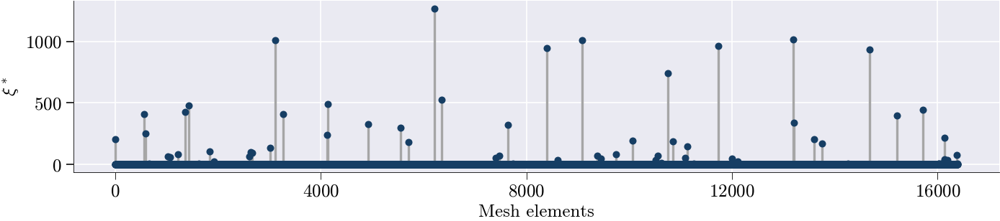
Run HyperROM simulation
# Run the hyper-reduced ROM simulation using the NNLS weights
# x_nnls_m : array of non-negative least squares coefficients,
# used here to weight the reduced basis contributions
# rom will contain the hyper_rom solution as an attribute
rom.run_hyper_rom_simulation_ecsw(x_nnls_m)Snap 1/64 params=[379.40464169 0.45840518]
[Newton] Iter 0, step norm = 8.544e+03
[Newton] Iter 1, step norm = 2.053e+03
[Newton] Iter 2, step norm = 7.057e+01
[Newton] Iter 3, step norm = 7.668e-02
[Newton] Iter 4, step norm = 9.456e-08
Snap 2/64 params=[-5.69398211e+02 6.02409658e-02]
[Newton] Iter 0, step norm = 5.201e+03
[Newton] Iter 1, step norm = 8.254e+02
[Newton] Iter 2, step norm = 4.919e+01
[Newton] Iter 3, step norm = 1.564e-01
[Newton] Iter 4, step norm = 1.787e-06
Snap 3/64 params=[-4.22111435e+02 3.27294988e-01]
[Newton] Iter 0, step norm = 6.235e+03
[Newton] Iter 1, step norm = 6.006e+02
[Newton] Iter 2, step norm = 8.297e+00
[Newton] Iter 3, step norm = 1.568e-03
[Newton] Iter 4, step norm = 1.535e-08
Snap 4/64 params=[6.12972487e+02 1.63946371e-01]
[Newton] Iter 0, step norm = 9.116e+03
[Newton] Iter 1, step norm = 1.581e+03
[Newton] Iter 2, step norm = 1.339e+02
[Newton] Iter 3, step norm = 8.038e-01
[Newton] Iter 4, step norm = 3.184e-05
Snap 5/64 params=[9.59468717e+02 2.58334863e-01]
[Newton] Iter 0, step norm = 1.289e+04
[Newton] Iter 1, step norm = 2.249e+03
[Newton] Iter 2, step norm = 1.951e+02
[Newton] Iter 3, step norm = 1.214e+00
[Newton] Iter 4, step norm = 5.094e-05
Snap 6/64 params=[-21.40811458 0.21905153]
[Newton] Iter 0, step norm = 4.884e+03
[Newton] Iter 1, step norm = 5.235e+02
[Newton] Iter 2, step norm = 9.530e+00
[Newton] Iter 3, step norm = 3.109e-03
[Newton] Iter 4, step norm = 9.226e-09
Snap 7/64 params=[-9.71441925e+02 3.93336046e-01]
[Newton] Iter 0, step norm = 9.172e+03
[Newton] Iter 1, step norm = 4.803e+03
[Newton] Iter 2, step norm = 5.501e+02
[Newton] Iter 3, step norm = 5.499e+00
[Newton] Iter 4, step norm = 5.656e-04
Snap 8/64 params=[32.54458867 0.11914556]
[Newton] Iter 0, step norm = 1.881e+03
[Newton] Iter 1, step norm = 1.328e+02
[Newton] Iter 2, step norm = 8.730e-01
[Newton] Iter 3, step norm = 3.870e-05
Snap 9/64 params=[213.58328871 0.3480804 ]
[Newton] Iter 0, step norm = 9.195e+03
[Newton] Iter 1, step norm = 1.122e+03
[Newton] Iter 2, step norm = 2.896e+01
[Newton] Iter 3, step norm = 1.844e-02
[Newton] Iter 4, step norm = 6.206e-09
Snap 10/64 params=[-7.74564363e+02 1.37362778e-01]
[Newton] Iter 0, step norm = 6.934e+03
[Newton] Iter 1, step norm = 1.078e+03
[Newton] Iter 2, step norm = 5.943e+01
[Newton] Iter 3, step norm = 1.622e-01
[Newton] Iter 4, step norm = 1.329e-06
Snap 11/64 params=[-232.46311769 0.49817443]
[Newton] Iter 0, step norm = 1.201e+04
[Newton] Iter 1, step norm = 7.792e+03
[Newton] Iter 2, step norm = 1.214e+03
[Newton] Iter 3, step norm = 2.059e+01
[Newton] Iter 4, step norm = 5.916e-03
[Newton] Iter 5, step norm = 2.333e-08
Snap 12/64 params=[7.94526013e+02 2.23639673e-02]
[Newton] Iter 0, step norm = 3.544e+03
[Newton] Iter 1, step norm = 5.210e+02
[Newton] Iter 2, step norm = 2.385e+01
[Newton] Iter 3, step norm = 4.657e-02
[Newton] Iter 4, step norm = 2.047e-07
Snap 13/64 params=[6.33093875e+02 4.31213229e-01]
[Newton] Iter 0, step norm = 9.222e+03
[Newton] Iter 1, step norm = 6.808e+03
[Newton] Iter 2, step norm = 1.275e+03
[Newton] Iter 3, step norm = 2.952e+01
[Newton] Iter 4, step norm = 1.560e-02
[Newton] Iter 5, step norm = 7.026e-09
Snap 14/64 params=[-3.24078431e+02 7.93764829e-02]
[Newton] Iter 0, step norm = 6.189e+03
[Newton] Iter 1, step norm = 1.031e+03
[Newton] Iter 2, step norm = 7.410e+01
[Newton] Iter 3, step norm = 3.321e-01
[Newton] Iter 4, step norm = 7.464e-06
Snap 15/64 params=[-6.84534529e+02 2.84918629e-01]
[Newton] Iter 0, step norm = 6.328e+03
[Newton] Iter 1, step norm = 3.298e+03
[Newton] Iter 2, step norm = 3.758e+02
[Newton] Iter 3, step norm = 3.741e+00
[Newton] Iter 4, step norm = 3.853e-04
Snap 16/64 params=[3.74406502e+02 1.98266296e-01]
[Newton] Iter 0, step norm = 9.850e+03
[Newton] Iter 1, step norm = 1.662e+03
[Newton] Iter 2, step norm = 1.250e+02
[Newton] Iter 3, step norm = 6.021e-01
[Newton] Iter 4, step norm = 1.531e-05
Snap 17/64 params=[293.84621046 0.30568366]
[Newton] Iter 0, step norm = 2.629e+03
[Newton] Iter 1, step norm = 2.122e+02
[Newton] Iter 2, step norm = 1.123e+00
[Newton] Iter 3, step norm = 3.184e-05
Snap 18/64 params=[-7.33844534e+02 2.04844581e-01]
[Newton] Iter 0, step norm = 4.531e+03
[Newton] Iter 1, step norm = 1.670e+03
[Newton] Iter 2, step norm = 1.134e+02
[Newton] Iter 3, step norm = 4.469e-01
[Newton] Iter 4, step norm = 7.427e-06
Snap 19/64 params=[-273.77833799 0.40946727]
[Newton] Iter 0, step norm = 3.195e+03
[Newton] Iter 1, step norm = 2.088e+02
[Newton] Iter 2, step norm = 7.496e-01
[Newton] Iter 3, step norm = 9.792e-06
Snap 20/64 params=[7.14644143e+02 7.37782619e-02]
[Newton] Iter 0, step norm = 2.030e+04
[Newton] Iter 1, step norm = 6.471e+03
[Newton] Iter 2, step norm = 9.352e+02
[Newton] Iter 3, step norm = 7.569e+02
[Newton] Iter 4, step norm = 5.231e+01
[Newton] Iter 5, step norm = 3.748e-01
[Newton] Iter 6, step norm = 9.513e-04
Snap 21/64 params=[8.73147313e+02 4.73533255e-01]
[Newton] Iter 0, step norm = 9.694e+03
[Newton] Iter 1, step norm = 3.049e+03
[Newton] Iter 2, step norm = 1.610e+02
[Newton] Iter 3, step norm = 3.948e-01
[Newton] Iter 4, step norm = 2.510e-06
Snap 22/64 params=[-1.85091523e+02 1.18484898e-02]
[Newton] Iter 0, step norm = 3.042e+03
[Newton] Iter 1, step norm = 4.101e+02
[Newton] Iter 2, step norm = 1.430e+01
[Newton] Iter 3, step norm = 1.667e-02
[Newton] Iter 4, step norm = 3.537e-08
Snap 23/64 params=[-8.22895171e+02 3.73701671e-01]
[Newton] Iter 0, step norm = 8.117e+03
[Newton] Iter 1, step norm = 2.968e+03
[Newton] Iter 2, step norm = 1.983e+02
[Newton] Iter 3, step norm = 7.535e-01
[Newton] Iter 4, step norm = 1.145e-05
Snap 24/64 params=[134.00264829 0.14689736]
[Newton] Iter 0, step norm = 1.327e+03
[Newton] Iter 1, step norm = 9.290e+01
[Newton] Iter 2, step norm = 3.805e-01
[Newton] Iter 3, step norm = 6.556e-06
Snap 25/64 params=[112.12611198 0.38282099]
[Newton] Iter 0, step norm = 4.740e+03
[Newton] Iter 1, step norm = 5.989e+02
[Newton] Iter 2, step norm = 7.011e+00
[Newton] Iter 3, step norm = 9.508e-04
Snap 26/64 params=[-9.23110092e+02 9.45048016e-02]
[Newton] Iter 0, step norm = 2.996e+04
[Newton] Iter 1, step norm = 2.496e+04
[Newton] Iter 2, step norm = 2.306e+04
[Newton] Iter 3, step norm = 2.118e+04
[Newton] Iter 4, step norm = 2.182e+04
[Newton] Iter 5, step norm = 1.874e+04
[Newton] Iter 6, step norm = 2.458e+04
[Newton] Iter 7, step norm = 8.104e+04
[Newton] Iter 8, step norm = 1.912e+05
[Newton] Iter 9, step norm = 6.606e+05
[Newton] Iter 10, step norm = 1.736e+06
[Newton] Iter 11, step norm = 5.306e+06
[Newton] Iter 12, step norm = 1.485e+07
[Newton] Iter 13, step norm = 4.426e+07
[Newton] Iter 14, step norm = 1.222e+08
[Newton] Iter 15, step norm = 3.535e+08
[Newton] Iter 16, step norm = 9.962e+08
[Newton] Iter 17, step norm = 2.854e+09
[Newton] Iter 18, step norm = 8.087e+09
[Newton] Iter 19, step norm = 2.309e+10
[Newton] Iter 20, step norm = 6.556e+10
[Newton] Iter 21, step norm = 1.869e+11
[Newton] Iter 22, step norm = 4.608e+11
[Newton] Iter 23, step norm = 7.196e+11
[Newton] Iter 24, step norm = 7.217e+11
[Newton] Iter 25, step norm = 6.697e+11
[Newton] Iter 26, step norm = 2.145e+12
[Newton] Iter 27, step norm = 5.196e+12
[Newton] Iter 28, step norm = 7.076e+12
[Newton] Iter 29, step norm = 7.280e+12
[Newton] Iter 30, step norm = 7.625e+12
[Newton] Iter 31, step norm = 8.020e+12
[Newton] Iter 32, step norm = 8.882e+12
[Newton] Iter 33, step norm = 1.050e+13
[Newton] Iter 34, step norm = 1.152e+13
[Newton] Iter 35, step norm = 1.169e+13
[Newton] Iter 36, step norm = 1.183e+13
[Newton] Iter 37, step norm = 1.191e+13
[Newton] Iter 38, step norm = 1.211e+13
[Newton] Iter 39, step norm = 1.251e+13
[ROM Newton] iter 40: reducing α → 5.00e-01
[Newton] Iter 40, step norm = 1.305e+13
[Newton] Iter 41, step norm = 8.043e+11
[Newton] Iter 42, step norm = 7.417e+11
[Newton] Iter 43, step norm = 6.850e+11
[Newton] Iter 44, step norm = 6.317e+11
[Newton] Iter 45, step norm = 5.834e+11
[Newton] Iter 46, step norm = 5.380e+11
[Newton] Iter 47, step norm = 4.969e+11
[Newton] Iter 48, step norm = 4.582e+11
[Newton] Iter 49, step norm = 4.232e+11
[Newton] Iter 50, step norm = 3.902e+11
[Newton] Iter 51, step norm = 3.604e+11
[Newton] Iter 52, step norm = 3.322e+11
[Newton] Iter 53, step norm = 3.069e+11
[Newton] Iter 54, step norm = 2.829e+11
[Newton] Iter 55, step norm = 2.613e+11
[Newton] Iter 56, step norm = 2.409e+11
[Newton] Iter 57, step norm = 2.225e+11
[Newton] Iter 58, step norm = 2.051e+11
[Newton] Iter 59, step norm = 1.894e+11
[Newton] Iter 60, step norm = 1.746e+11
[Newton] Iter 61, step norm = 1.613e+11
[Newton] Iter 62, step norm = 1.486e+11
[Newton] Iter 63, step norm = 1.373e+11
[Newton] Iter 64, step norm = 1.265e+11
[Newton] Iter 65, step norm = 1.168e+11
[Newton] Iter 66, step norm = 1.077e+11
[Newton] Iter 67, step norm = 9.945e+10
[Newton] Iter 68, step norm = 9.163e+10
[Newton] Iter 69, step norm = 8.463e+10
[Newton] Iter 70, step norm = 7.797e+10
[Newton] Iter 71, step norm = 7.202e+10
[Newton] Iter 72, step norm = 6.634e+10
[Newton] Iter 73, step norm = 6.127e+10
[Newton] Iter 74, step norm = 5.644e+10
[Newton] Iter 75, step norm = 5.213e+10
[Newton] Iter 76, step norm = 4.801e+10
[Newton] Iter 77, step norm = 4.434e+10
[Newton] Iter 78, step norm = 4.083e+10
[Newton] Iter 79, step norm = 3.771e+10
[ROM Newton] iter 80: reducing α → 2.50e-01
[Newton] Iter 80, step norm = 3.472e+10
[Newton] Iter 81, step norm = 5.167e+08
[Newton] Iter 82, step norm = 1.205e+07
[Newton] Iter 83, step norm = 2.370e+06
[Newton] Iter 84, step norm = 6.350e+05
[Newton] Iter 85, step norm = 2.178e+05
[Newton] Iter 86, step norm = 9.044e+04
[Newton] Iter 87, step norm = 4.347e+04
[Newton] Iter 88, step norm = 2.334e+04
[Newton] Iter 89, step norm = 1.362e+04
[Newton] Iter 90, step norm = 8.460e+03
[Newton] Iter 91, step norm = 5.508e+03
[Newton] Iter 92, step norm = 3.716e+03
[Newton] Iter 93, step norm = 2.574e+03
[Newton] Iter 94, step norm = 1.819e+03
[Newton] Iter 95, step norm = 1.304e+03
[Newton] Iter 96, step norm = 9.459e+02
[Newton] Iter 97, step norm = 6.918e+02
[Newton] Iter 98, step norm = 5.091e+02
[Newton] Iter 99, step norm = 3.765e+02
[Newton] Iter 100, step norm = 2.794e+02
[Newton] Iter 101, step norm = 2.079e+02
[Newton] Iter 102, step norm = 1.550e+02
[Newton] Iter 103, step norm = 1.157e+02
[Newton] Iter 104, step norm = 8.650e+01
[Newton] Iter 105, step norm = 6.471e+01
[Newton] Iter 106, step norm = 4.844e+01
[Newton] Iter 107, step norm = 3.628e+01
[Newton] Iter 108, step norm = 2.718e+01
[Newton] Iter 109, step norm = 2.037e+01
[Newton] Iter 110, step norm = 1.527e+01
[Newton] Iter 111, step norm = 1.145e+01
[Newton] Iter 112, step norm = 8.581e+00
[Newton] Iter 113, step norm = 6.434e+00
[Newton] Iter 114, step norm = 4.825e+00
[Newton] Iter 115, step norm = 3.618e+00
[Newton] Iter 116, step norm = 2.713e+00
[Newton] Iter 117, step norm = 2.035e+00
[Newton] Iter 118, step norm = 1.526e+00
[Newton] Iter 119, step norm = 1.144e+00
[ROM Newton] iter 120: reducing α → 1.25e-01
[Newton] Iter 120, step norm = 8.583e-01
[Newton] Iter 121, step norm = 7.510e-01
[Newton] Iter 122, step norm = 6.571e-01
[Newton] Iter 123, step norm = 5.750e-01
[Newton] Iter 124, step norm = 5.031e-01
[Newton] Iter 125, step norm = 4.402e-01
[Newton] Iter 126, step norm = 3.852e-01
[Newton] Iter 127, step norm = 3.370e-01
[Newton] Iter 128, step norm = 2.949e-01
[Newton] Iter 129, step norm = 2.580e-01
[Newton] Iter 130, step norm = 2.258e-01
[Newton] Iter 131, step norm = 1.976e-01
[Newton] Iter 132, step norm = 1.729e-01
[Newton] Iter 133, step norm = 1.513e-01
[Newton] Iter 134, step norm = 1.323e-01
[Newton] Iter 135, step norm = 1.158e-01
[Newton] Iter 136, step norm = 1.013e-01
[Newton] Iter 137, step norm = 8.866e-02
[Newton] Iter 138, step norm = 7.758e-02
[Newton] Iter 139, step norm = 6.788e-02
[Newton] Iter 140, step norm = 5.940e-02
[Newton] Iter 141, step norm = 5.197e-02
[Newton] Iter 142, step norm = 4.548e-02
[Newton] Iter 143, step norm = 3.979e-02
[Newton] Iter 144, step norm = 3.482e-02
[Newton] Iter 145, step norm = 3.047e-02
[Newton] Iter 146, step norm = 2.666e-02
[Newton] Iter 147, step norm = 2.332e-02
[Newton] Iter 148, step norm = 2.041e-02
[Newton] Iter 149, step norm = 1.786e-02
[Newton] Iter 150, step norm = 1.563e-02
[Newton] Iter 151, step norm = 1.367e-02
[Newton] Iter 152, step norm = 1.196e-02
[Newton] Iter 153, step norm = 1.047e-02
[Newton] Iter 154, step norm = 9.160e-03
[Newton] Iter 155, step norm = 8.015e-03
[Newton] Iter 156, step norm = 7.013e-03
[Newton] Iter 157, step norm = 6.136e-03
[Newton] Iter 158, step norm = 5.369e-03
[Newton] Iter 159, step norm = 4.698e-03
[ROM Newton] iter 160: reducing α → 6.25e-02
[Newton] Iter 160, step norm = 4.111e-03
[Newton] Iter 161, step norm = 3.854e-03
[Newton] Iter 162, step norm = 3.613e-03
[Newton] Iter 163, step norm = 3.387e-03
[Newton] Iter 164, step norm = 3.175e-03
[Newton] Iter 165, step norm = 2.977e-03
[Newton] Iter 166, step norm = 2.791e-03
[Newton] Iter 167, step norm = 2.617e-03
[Newton] Iter 168, step norm = 2.453e-03
[Newton] Iter 169, step norm = 2.300e-03
[Newton] Iter 170, step norm = 2.156e-03
[Newton] Iter 171, step norm = 2.021e-03
[Newton] Iter 172, step norm = 1.895e-03
[Newton] Iter 173, step norm = 1.776e-03
[Newton] Iter 174, step norm = 1.665e-03
[Newton] Iter 175, step norm = 1.561e-03
[Newton] Iter 176, step norm = 1.464e-03
[Newton] Iter 177, step norm = 1.372e-03
[Newton] Iter 178, step norm = 1.286e-03
[Newton] Iter 179, step norm = 1.206e-03
[Newton] Iter 180, step norm = 1.131e-03
[Newton] Iter 181, step norm = 1.060e-03
[Newton] Iter 182, step norm = 9.938e-04
Snap 27/64 params=[-68.78060661 0.26786986]
[Newton] Iter 0, step norm = 3.348e+03
[Newton] Iter 1, step norm = 4.399e+02
[Newton] Iter 2, step norm = 5.520e+00
[Newton] Iter 3, step norm = 8.623e-04
Snap 28/64 params=[8.80846407e+02 2.44673216e-01]
[Newton] Iter 0, step norm = 4.428e+03
[Newton] Iter 1, step norm = 1.241e+03
[Newton] Iter 2, step norm = 5.491e+01
[Newton] Iter 3, step norm = 9.750e-02
[Newton] Iter 4, step norm = 3.383e-07
Snap 29/64 params=[5.31423109e+02 3.33873691e-01]
[Newton] Iter 0, step norm = 4.808e+03
[Newton] Iter 1, step norm = 8.251e+02
[Newton] Iter 2, step norm = 1.632e+01
[Newton] Iter 3, step norm = 6.178e-03
[Newton] Iter 4, step norm = 1.094e-08
Snap 30/64 params=[-4.72410511e+02 1.84711821e-01]
[Newton] Iter 0, step norm = 3.723e+03
[Newton] Iter 1, step norm = 9.923e+02
[Newton] Iter 2, step norm = 4.055e+01
[Newton] Iter 3, step norm = 6.222e-02
[Newton] Iter 4, step norm = 1.702e-07
Snap 31/64 params=[-5.20089112e+02 4.52807373e-01]
[Newton] Iter 0, step norm = 7.249e+03
[Newton] Iter 1, step norm = 1.211e+03
[Newton] Iter 2, step norm = 2.283e+01
[Newton] Iter 3, step norm = 7.840e-03
[Newton] Iter 4, step norm = 9.679e-09
Snap 32/64 params=[4.59963931e+02 3.84954219e-02]
[Newton] Iter 0, step norm = 2.623e+04
[Newton] Iter 1, step norm = 3.188e+04
[Newton] Iter 2, step norm = 3.867e+04
[Newton] Iter 3, step norm = 7.684e+04
[Newton] Iter 4, step norm = 1.275e+05
[Newton] Iter 5, step norm = 3.551e+05
[Newton] Iter 6, step norm = 7.584e+05
[Newton] Iter 7, step norm = 2.326e+06
[Newton] Iter 8, step norm = 5.732e+06
[Newton] Iter 9, step norm = 1.738e+07
[Newton] Iter 10, step norm = 4.567e+07
[Newton] Iter 11, step norm = 1.356e+08
[Newton] Iter 12, step norm = 3.700e+08
[Newton] Iter 13, step norm = 1.081e+09
[Newton] Iter 14, step norm = 3.005e+09
[Newton] Iter 15, step norm = 8.692e+09
[Newton] Iter 16, step norm = 2.441e+10
[Newton] Iter 17, step norm = 7.014e+10
[Newton] Iter 18, step norm = 1.981e+11
[Newton] Iter 19, step norm = 5.671e+11
[Newton] Iter 20, step norm = 1.553e+12
[Newton] Iter 21, step norm = 2.751e+12
[Newton] Iter 22, step norm = 3.453e+12
[Newton] Iter 23, step norm = 4.359e+12
[Newton] Iter 24, step norm = 4.716e+12
[Newton] Iter 25, step norm = 4.152e+12
[Newton] Iter 26, step norm = 3.238e+12
[Newton] Iter 27, step norm = 2.252e+12
[Newton] Iter 28, step norm = 2.113e+12
[Newton] Iter 29, step norm = 2.501e+12
[Newton] Iter 30, step norm = 3.005e+12
[Newton] Iter 31, step norm = 3.829e+12
[Newton] Iter 32, step norm = 4.524e+12
[Newton] Iter 33, step norm = 4.501e+12
[Newton] Iter 34, step norm = 4.251e+12
[Newton] Iter 35, step norm = 4.144e+12
[Newton] Iter 36, step norm = 4.106e+12
[Newton] Iter 37, step norm = 4.103e+12
[Newton] Iter 38, step norm = 4.107e+12
[Newton] Iter 39, step norm = 4.140e+12
[ROM Newton] iter 40: reducing α → 5.00e-01
[Newton] Iter 40, step norm = 4.203e+12
[Newton] Iter 41, step norm = 1.485e+11
[Newton] Iter 42, step norm = 1.370e+11
[Newton] Iter 43, step norm = 1.265e+11
[Newton] Iter 44, step norm = 1.167e+11
[Newton] Iter 45, step norm = 1.077e+11
[Newton] Iter 46, step norm = 9.935e+10
[Newton] Iter 47, step norm = 9.174e+10
[Newton] Iter 48, step norm = 8.460e+10
[Newton] Iter 49, step norm = 7.812e+10
[Newton] Iter 50, step norm = 7.204e+10
[Newton] Iter 51, step norm = 6.652e+10
[Newton] Iter 52, step norm = 6.134e+10
[Newton] Iter 53, step norm = 5.664e+10
[Newton] Iter 54, step norm = 5.223e+10
[Newton] Iter 55, step norm = 4.823e+10
[Newton] Iter 56, step norm = 4.447e+10
[Newton] Iter 57, step norm = 4.106e+10
[Newton] Iter 58, step norm = 3.785e+10
[Newton] Iter 59, step norm = 3.495e+10
[Newton] Iter 60, step norm = 3.222e+10
[Newton] Iter 61, step norm = 2.975e+10
[Newton] Iter 62, step norm = 2.743e+10
[Newton] Iter 63, step norm = 2.532e+10
[Newton] Iter 64, step norm = 2.334e+10
[Newton] Iter 65, step norm = 2.155e+10
[Newton] Iter 66, step norm = 1.986e+10
[Newton] Iter 67, step norm = 1.834e+10
[Newton] Iter 68, step norm = 1.690e+10
[Newton] Iter 69, step norm = 1.560e+10
[Newton] Iter 70, step norm = 1.438e+10
[Newton] Iter 71, step norm = 1.327e+10
[Newton] Iter 72, step norm = 1.223e+10
[Newton] Iter 73, step norm = 1.129e+10
[Newton] Iter 74, step norm = 1.041e+10
[Newton] Iter 75, step norm = 9.604e+09
[Newton] Iter 76, step norm = 8.858e+09
[Newton] Iter 77, step norm = 8.180e+09
[Newton] Iter 78, step norm = 7.546e+09
[Newton] Iter 79, step norm = 6.968e+09
[ROM Newton] iter 80: reducing α → 2.50e-01
[Newton] Iter 80, step norm = 6.428e+09
[Newton] Iter 81, step norm = 4.631e+08
[Newton] Iter 82, step norm = 3.754e+07
[Newton] Iter 83, step norm = 6.746e+06
[Newton] Iter 84, step norm = 1.264e+06
[Newton] Iter 85, step norm = 3.278e+05
[Newton] Iter 86, step norm = 1.140e+05
[Newton] Iter 87, step norm = 4.817e+04
[Newton] Iter 88, step norm = 2.365e+04
[Newton] Iter 89, step norm = 1.298e+04
[Newton] Iter 90, step norm = 7.723e+03
[Newton] Iter 91, step norm = 4.892e+03
[Newton] Iter 92, step norm = 3.231e+03
[Newton] Iter 93, step norm = 2.205e+03
[Newton] Iter 94, step norm = 1.543e+03
[Newton] Iter 95, step norm = 1.098e+03
[Newton] Iter 96, step norm = 7.914e+02
[Newton] Iter 97, step norm = 5.764e+02
[Newton] Iter 98, step norm = 4.228e+02
[Newton] Iter 99, step norm = 3.119e+02
[Newton] Iter 100, step norm = 2.310e+02
[Newton] Iter 101, step norm = 1.717e+02
[Newton] Iter 102, step norm = 1.279e+02
[Newton] Iter 103, step norm = 9.539e+01
[Newton] Iter 104, step norm = 7.126e+01
[Newton] Iter 105, step norm = 5.329e+01
[Newton] Iter 106, step norm = 3.988e+01
[Newton] Iter 107, step norm = 2.986e+01
[Newton] Iter 108, step norm = 2.237e+01
[Newton] Iter 109, step norm = 1.676e+01
[Newton] Iter 110, step norm = 1.256e+01
[Newton] Iter 111, step norm = 9.415e+00
[Newton] Iter 112, step norm = 7.059e+00
[Newton] Iter 113, step norm = 5.293e+00
[Newton] Iter 114, step norm = 3.969e+00
[Newton] Iter 115, step norm = 2.976e+00
[Newton] Iter 116, step norm = 2.232e+00
[Newton] Iter 117, step norm = 1.674e+00
[Newton] Iter 118, step norm = 1.255e+00
[Newton] Iter 119, step norm = 9.413e-01
[ROM Newton] iter 120: reducing α → 1.25e-01
[Newton] Iter 120, step norm = 7.059e-01
[Newton] Iter 121, step norm = 6.177e-01
[Newton] Iter 122, step norm = 5.405e-01
[Newton] Iter 123, step norm = 4.729e-01
[Newton] Iter 124, step norm = 4.138e-01
[Newton] Iter 125, step norm = 3.621e-01
[Newton] Iter 126, step norm = 3.168e-01
[Newton] Iter 127, step norm = 2.772e-01
[Newton] Iter 128, step norm = 2.425e-01
[Newton] Iter 129, step norm = 2.122e-01
[Newton] Iter 130, step norm = 1.857e-01
[Newton] Iter 131, step norm = 1.625e-01
[Newton] Iter 132, step norm = 1.422e-01
[Newton] Iter 133, step norm = 1.244e-01
[Newton] Iter 134, step norm = 1.089e-01
[Newton] Iter 135, step norm = 9.525e-02
[Newton] Iter 136, step norm = 8.334e-02
[Newton] Iter 137, step norm = 7.292e-02
[Newton] Iter 138, step norm = 6.381e-02
[Newton] Iter 139, step norm = 5.583e-02
[Newton] Iter 140, step norm = 4.885e-02
[Newton] Iter 141, step norm = 4.275e-02
[Newton] Iter 142, step norm = 3.740e-02
[Newton] Iter 143, step norm = 3.273e-02
[Newton] Iter 144, step norm = 2.864e-02
[Newton] Iter 145, step norm = 2.506e-02
[Newton] Iter 146, step norm = 2.192e-02
[Newton] Iter 147, step norm = 1.918e-02
[Newton] Iter 148, step norm = 1.679e-02
[Newton] Iter 149, step norm = 1.469e-02
[Newton] Iter 150, step norm = 1.285e-02
[Newton] Iter 151, step norm = 1.125e-02
[Newton] Iter 152, step norm = 9.840e-03
[Newton] Iter 153, step norm = 8.610e-03
[Newton] Iter 154, step norm = 7.533e-03
[Newton] Iter 155, step norm = 6.592e-03
[Newton] Iter 156, step norm = 5.768e-03
[Newton] Iter 157, step norm = 5.047e-03
[Newton] Iter 158, step norm = 4.416e-03
[Newton] Iter 159, step norm = 3.864e-03
[ROM Newton] iter 160: reducing α → 6.25e-02
[Newton] Iter 160, step norm = 3.381e-03
[Newton] Iter 161, step norm = 3.170e-03
[Newton] Iter 162, step norm = 2.972e-03
[Newton] Iter 163, step norm = 2.786e-03
[Newton] Iter 164, step norm = 2.612e-03
[Newton] Iter 165, step norm = 2.448e-03
[Newton] Iter 166, step norm = 2.295e-03
[Newton] Iter 167, step norm = 2.152e-03
[Newton] Iter 168, step norm = 2.017e-03
[Newton] Iter 169, step norm = 1.891e-03
[Newton] Iter 170, step norm = 1.773e-03
[Newton] Iter 171, step norm = 1.662e-03
[Newton] Iter 172, step norm = 1.558e-03
[Newton] Iter 173, step norm = 1.461e-03
[Newton] Iter 174, step norm = 1.370e-03
[Newton] Iter 175, step norm = 1.284e-03
[Newton] Iter 176, step norm = 1.204e-03
[Newton] Iter 177, step norm = 1.129e-03
[Newton] Iter 178, step norm = 1.058e-03
[Newton] Iter 179, step norm = 9.919e-04([0.017130149925297652,
0.025245495181483817,
0.0191627259002707,
0.022479669197132988,
0.020437152486362395,
0.021240411826437437,
0.01808211326008817,
0.023597255993373607,
0.018809327753716056,
0.02312924152620783,
0.016595467490519968,
0.026432399759299143,
0.017515827561007682,
0.024685682673898722,
0.01992602595437646,
0.02169168170810831,
0.019544917986926535,
0.021546367027624327,
0.017836564904233573,
0.024847655448731763,
0.016922970320226004,
0.026780598929729282,
0.018390527198420808,
0.02289225476540015,
0.01824631772253709,
0.024272262415227827,
0.02025068861996341,
0.020709691482220977,
0.019049717270009803,
0.021995810968471023,
0.01720789004547179,
0.025930967359520267],
[57.83471118866306,
81.89502728063918,
87.85239052224358,
86.66936858815944,
95.51219329194753,
95.42312611872623,
89.9714544212793,
105.85989046273701,
88.52782127719468,
87.99105843421766,
77.86194160146742,
93.95139756233262,
78.97947698239147,
94.81718288636661,
88.762093878698,
93.24443873097431,
111.31760062681525,
85.86383851145834,
101.04458447175192,
51.57589273599651,
68.55922996345689,
80.9518336035431,
88.30925612410691,
99.6580870589968,
104.36778597987148,
2.509120561177432,
114.63713921746711,
85.91034957346976,
91.65286057155986,
87.7659052424241,
76.68669708244683,
2.509893349936787])# Convert the list of nonlinear hyper-ROM solutions into a NumPy array
NLS_hyper_rom = np.asarray(rom.hyper_rom_solutions)
# Retrieve the raw speed-up factors computed by the ROM
hyper_ROM_speed_up = rom.hyper_speed_up
# Drop the first element (often the full-order baseline) to analyze only relative speed-ups
hyper_ROM_speed_up = hyper_ROM_speed_up[1:]
# Fetch the relative error of the hyper-reduced ROM from the ROM object
hyper_ROM_relative_error = rom.hyper_rom_errorHyper ROM vs Full order solution performance statistics
# --- Hyper-reduced ROM error analysis ---
# Compute a flat matrix of error metrics comparing true nonlinear solutions to hyper-ROM approximations
matrix = compute_rom_error_metrics_flat(NLS_test, NLS_hyper_rom)
# Produce a text-based report summarizing these hyper-ROM error metrics
generate_rom_error_report(matrix)
# Plot diagnostic figures: error vs. speed-up for the hyper-reduced ROM
plot_rom_error_diagnostics_flat(
NLS_test, # full-order (true) solution snapshots
NLS_hyper_rom, # hyper-ROM-generated solution snapshots
hyper_ROM_relative_error, # precomputed relative error of the hyper-ROM
hyper_ROM_speed_up, # precomputed speed-up factor of the hyper-ROM
sim_axis=['True', 'Hyper ROM'],
metrics=matrix # the matrix of error metrics just computed
)
===================
ROM Accuracy Report
===================
Global Errors:
L2 Error: 1.6586e+01
Relative L2 Error: 1.8749e-04
L∞ Error: 4.2374e-02
Relative L∞ Error: 1.7109e-04
RMSE: 2.2906e-02
MAE: 2.0643e-02
Statistical Fit:
R² Score: 1.0000
Explained Variance: 1.0003
Error Distribution:
Median Error: -1.9716e-02
95th Percentile Error: 3.7782e-02
Time/Parameter-Dependent Errors:
Average Rel L2 Error over time/parameter: 2.1018e-04
Max Rel L2 Error over time/parameter: 2.6781e-04
Min Rel L2 Error over time/parameter: 1.6595e-04
――――――――――――――――――――――――――――――――――――――――――――――――――――――――――――――――――――――――――――――――――――――――――――――――――――――――――――――――――――――――――――――――――――――――――――――――――――――――――――――――――――――――――――――――――――――――――――――――――――――――――――――――――――――――――――――――――――――――――――――――――――――――――――――――――――――――――――――――――――――――――――――――――――――――――――――――――――――――――――――――――――――――――――――――――――――――――――――――――――――――――――――――――――――――――――――――――――――――――――――――――――――――――――――――――――――――――――――――――――――――――――――――――――――――――――――――――――――――――――――――――――――――――――――――――――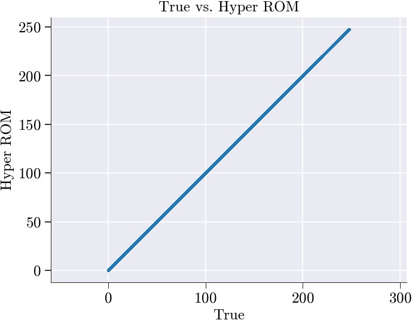
spatial_shape not given → skipping spatial snapshots.
--------------------------------------------------------------------------------------------------------------------------------------------------------------------------------------------------------------------------------------------------------------------------------------------------------------------------------------------------------------------------------------------------------------------------------------------------------------------------------------------------------------------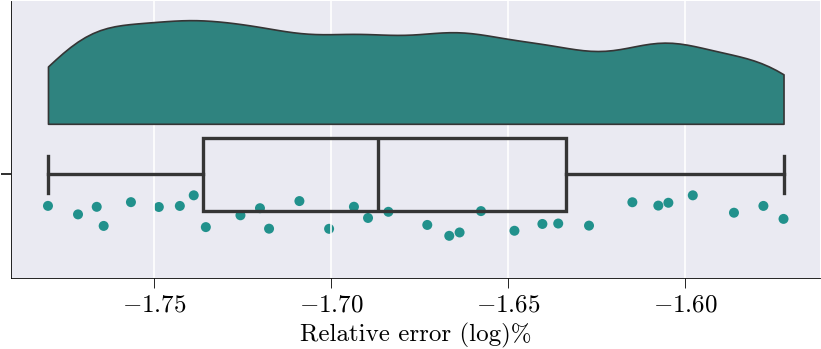
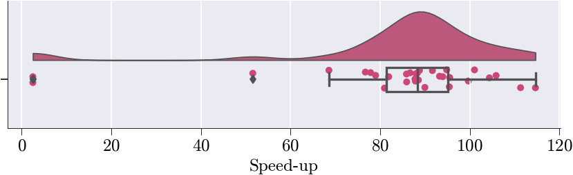